library(igraph); library(qgraph)
g1 <- graph(edges = c(1,2, 2,3, 3,1),
n = 3, directed = FALSE)
plot(g1) # an undirected network with 3 nodes
g2 <- graph(edges=c(1,2, 2,3, 3,1, 1,3, 3,3),
n = 3, directed=TRUE)
plot(g2) # an directed network with self-excitation on node 3
get.adjacency(g2) # weight matrix
fcn <- make_full_graph(10) # a fully connected network
plot(fcn, vertex.size = 10, vertex.label = NA)
layout(1)
set.seed(1)
adj <- matrix(rnorm(100, 0, .2), 10, 10) # a weighted adjacency matrix
adj <- adj * sample(0:1, 100, replace = TRUE,
prob = c(.8, .2)) # set 80% to 0
qgraph(adj) # plot in qgraph
edge_density(fcn) # indeed 1
edge_density(graph_from_adjacency_matrix(adj, weighted=TRUE))# now .2
centralityPlot(qgraph(adj)) # note centrality() gives more indices6 心理学的ネットワークモデル
6.1 はじめに
共通原因理論は心理学で広く受け入れられている。認知検査の高得点は高い知能に帰される。カリスマ性はさまざまな指導的資質と結び付けられる。\(p\) 因子（精神病理因子）の高得点はさまざまな精神保健上の問題と結び付けられる。 共通原因の説明は、その単純さと、因子分析のような統計的方法の利用可能性のために人気がある。しかしほとんどの場合、共通原因は仮説的な構成体にすぎない。それでも多くの人が共通原因理論を受け入れるのは、代替物が見当たらないからである。これは誤りである。複雑系理論は、統計的アプローチを含む強力な代替物を提供する。本章の主たるテーゼは、人間の心の機能（および機能不全）が、認知機能、心的状態、症状、行動といったさまざまな心理的要素の複雑な相互作用として最もよく理解される、というものである。
共通原因は、それが説明することを意図している観察された関係とは独立に同定できないなら、疑わしい。心理的下位システムの相互作用は、ネットワーク、すなわち心理的ネットワークとしてモデル化できる。
心理的ネットワークの研究は、おそらく今日の心理学における複雑系研究の最も盛んな領域である。本章はこの新たな研究の系譜についてである。一般知能の相利共生モデルに関する論文 (van der Maas et al. 2006) はこのアプローチの根とみなせるが、figure fig-ch6-img1-old-70 に示すように、それが臨床心理学に応用されたとき (Borsboom 2017, 2008; Cramer et al. 2010)、とりわけ理論的な仕事が心理測定学的な道具によって裏付けられたとき (Epskamp, Borsboom, and Fried 2018; Epskamp et al. 2012; Marsman and Rhemtulla 2022) に、それは軌道に乗った。
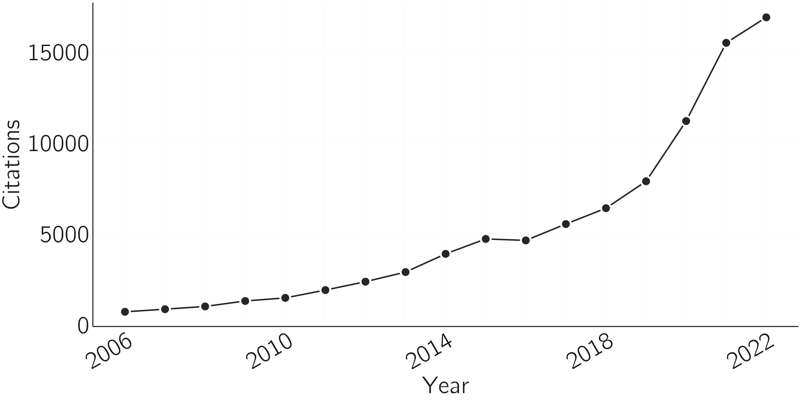
本章では、これらの理論的および心理測定学的な研究の系譜を、実践的な例を添えて提示し論じる。まず、ネットワーク理論への導入から始める。
6.2 ネットワーク理論
ネットワークが中心的な主題でない分野を想像するのは難しい。ネットワークは、素粒子物理学から社会ネットワークまで、生態系からインターネットまで、そして鉄道から脳まで、さまざまなシステムを理解する鍵である。ネットワーク理論の数学はそれほど把握しやすくないが、幸いなことに基本的な概念はそうである。
6.2.1 ネットワークの概念
ノードは何でもありうる——粒子、ニューロン、単語、人、駅など。 ネットワークの大きさはノードの数に等しい。ノードはリンクによって結ばれる。リンクは有向でも無向でもありうる。たとえば、因果的なリンクは有向である。時折、ノードから自分自身へのリンクも見られる。因果ネットワークでは、これは自己興奮を、あるいは重みが負であれば自己抑制を表しうる。ある場合には、リンクは単に存在するかしないかである。他の場合には、ほとんどのニューラルネットワークのように、リンクは重み付けされる。ノード間の結合の強さを示すすべての重みの行列は、隣接行列ないしエッジ行列と呼ばれる。無向ネットワークについては、隣接行列は対称である。自己ループのないネットワークについては、隣接行列の対角は 0 である。
ネットワーク、すなわちグラフの特別なタイプは、ノード（しばしば頂点と呼ばれる）とリンク（すなわち結合ないしエッジ）から成る。
結合ネットワークとは、あらゆるノードが、おそらくは中間のノードを通じて、他のあらゆるノードに結ばれているネットワークである。完全結合ネットワーク、すなわち完全グラフでは、あらゆるノードが他のあらゆるノードに直接結ばれている。そのようなネットワークは密度 1 をもつ（すなわち、存在するエッジの割合が 1）。
ノードはネットワークの中心にあることも周辺にあることもある。心理的ネットワークは空間的な次元をもたないので、これは文字どおりに取るべきではない。 近接中心性や次数中心性といった、多くの種類の中心性の尺度がある。ノードの次数は、それがもつリンクの数に等しい。ネットワークの平均次数は、すべてのノードにわたるリンク数の平均である。
中心性の尺度は、ネットワーク内の他のノードと比べた、あるノードの相対的な影響、制御、あるいは結合性を定量化する。
次数分布はいくつかの形をとりうる。ノードがランダムに結ばれるランダムグラフは、二項の次数分布をもつ。ほとんどの現実世界のネットワークは歪んだ次数分布をもつ。平均最短経路長（ASPL）は、最短経路（すなわち最も少ない中間ノード）を用いて一つのノードから別のノードへ到達するために横断しなければならないエッジの平均数である。
R には、ネットワークを作成・可視化し、ネットワークの性質を計算するための多くの方法が利用可能である。igraph と qgraph ライブラリは非常に有用である。パラメータ値を変えながら以下の R コードで実験するのは良い考えである。ネットワークのいくつかの鍵となる概念が figure fig-ch6-img2-old-71 に示されている。
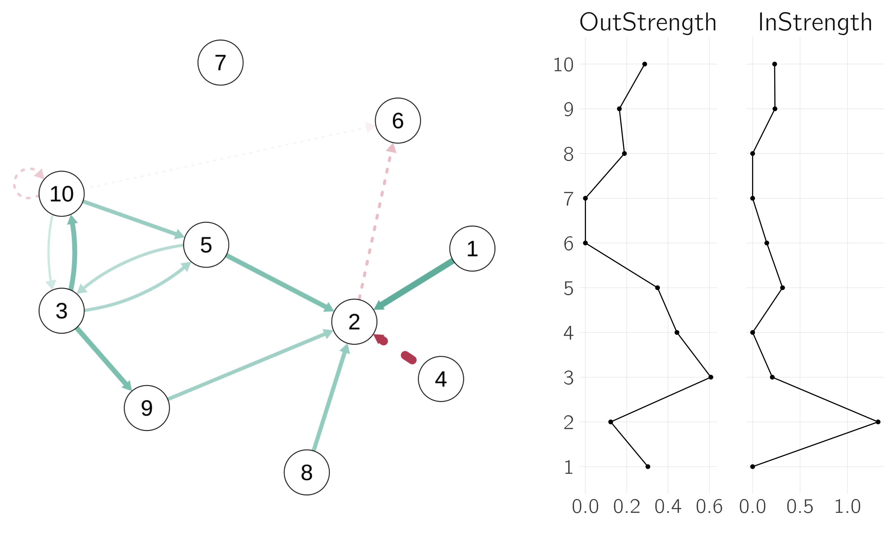
6.2.2 ネットワークのタイプ
単純なネットワークは閉路をもたない。無向非巡回グラフの一例は、ノードが（円ではなく）線上にあるものである。結合した無向非巡回グラフは木である。それらが部分的に結合していなければ、森である。家系図や引用ネットワークのような有向非巡回グラフは DAG と呼ばれる。現在のほとんどのニューラルネットワークは閉路のない順伝播型ネットワークだが、いわゆる再帰型ネットワークは閉路をもつ。
Igraph1 は特定のネットワークを作成するための驚くべき数の関数をもつ。いくつかの例が figure fig-ch6-img3-old-72 に示されている。
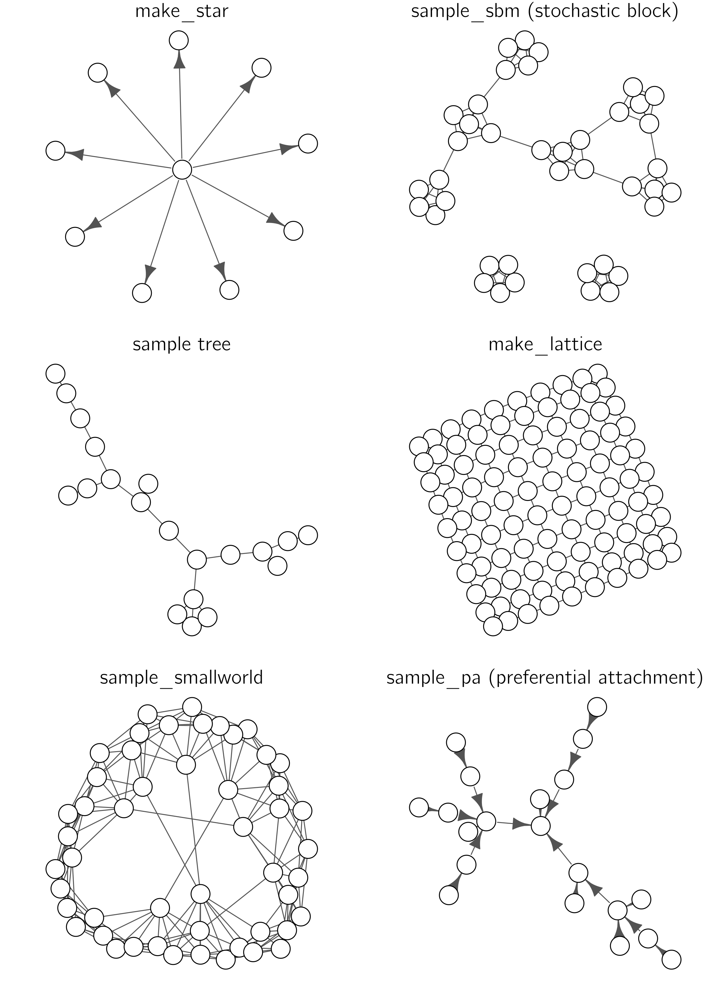
図の最後の場合、優先的選択（preferential attachment）は、動的に作成されるので特に関心の対象である。それは一つのノードから始まり、それから、すでに多くのリンクをもつノードへのリンクを好む新たなノードが加えられる。NetLogo モデル「Preferential Attachment simple」で、この成長過程を見られる。優先的選択ネットワークは、自明でない構造的パターンを示すので、しばしば複雑と呼ばれる。優先的選択ネットワークは「スケールフリー」であり、これは、次数分布がスケールにかかわらず同じに見える、ということを意味する。 スケールフリーネットワークは、高度に結合したノードへの標的を絞った攻撃に対するネットワークの頑健さと脆弱さを研究するのに有用である。高い結合性をもつハブを取り除くと、ネットワークが結合していない成分に分裂し、ネットワークの機能性を妨げる可能性がある。ネットワーク内のほとんどのノードは小さな次数（少数の結合）をもつので、ノードをランダムに取り除いてもネットワークの全体的な構造を撹乱しない傾向がある。スケールフリーネットワークは、ウェブサイトの結合から科学的協働まで、さまざまな現実世界のシナリオに存在すると考えられている。批判的な分析については、Broido and Clauset (2019) を参照されたい。
スケールフリーネットワークは、べき則に従う次数分布をもち、いくつかのノードは多くのリンクをもつが、ほとんどはわずかしかもたない。
もう一つのタイプの複雑ネットワークはスモールワールドネットワークである。 そのようなネットワークの任意の二つのノードの間の距離は常に比較的短い。有名な例は六次の握手の規則（六次の隔たりとしても知られる）であり、すべての人が互いに六回以下の握手で隔てられている、と述べる。2 この理由から、スモールワールドネットワークは社会ネットワークを通じた情報や疾病の広がりを研究するのに有用である。
スモールワールドネットワークはクラスターから成るが、クラスター間のリンクもある。
スケールフリーネットワークとスモールワールドネットワークは主に複雑系アプローチと結び付けられている。しかし私は、階層的すなわち入れ子の確率的ブロックモデル（HSBM）も等しく関係すると考える (Clauset, Moore, and Newman 2008)。 HSBM は SBM の概念を拡張する。すなわち、クラスターがより大きなクラスターの中に入れ子になり、それがひいてはさらに大きなクラスターの一部になり、連続した系列をなす（figure fig-ch6-extra を参照）。これはフラクタルに似ている。
確率的ブロックモデル（SBM）では、ノードはクラスターに組織され、結合はこれらのクラスター内でクラスター間よりも強いか頻繁である。
この入れ子は複雑系を理解するうえで決定的に重要であるように思われ、ハーバート・サイモンの影響力のある複雑性の建築における中心的な主題である (Simon 1962)。彼は、これらの入れ子の階層内の相互作用を記述するために準分解可能性（near decomposability）という概念を導入した。典型的には、各下位システム内の相互作用は、下位システム間のものよりも強く頻繁である。HSBM は現実を単純化しており、そこではレベルが混じり合い、低レベルの干渉が時折より高いレベルへとエスカレートしうるが、それは、心理学の分野を含め、複雑ネットワークを概念化するのに有用な枠組みとしてしばしば役立つ。
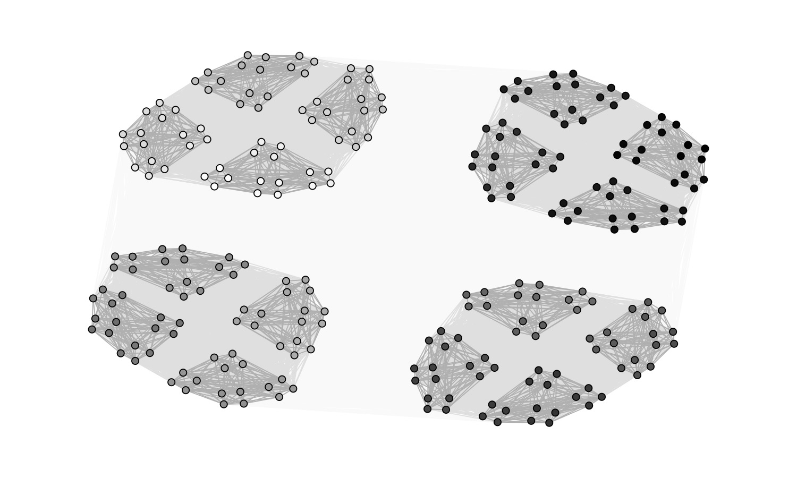
6.2.3 ネットワークダイナミクス
ネットワーク理論における顕著な相転移は巨大成分の創発である。 これは、\(n\) 個のノードの完全に結合していないネットワークから始めてランダムにリンクを加えるときに起こる。私たちは単に、ランダムなノードを取り、それが結合をもたない別のノードに結ぶ。これは初め多くの小さな結合していないクラスターをもたらすが、それから巨大成分が現れる（二次相転移）。これは約 \(n/2\) 本のリンクが加えられたときに起こる。NetLogo モデル「Giant Component」でこれを確かめられる。その含意は、十分な数のリンクをもつランダムに結合したネットワークは、ほとんど常に結合したネットワークである、ということである。
ランダムグラフないしネットワークにおいて、エッジの密度がある閾値を超えて増加すると、巨大成分が突然現れる相転移が生じる。
これはネットワークダイナミクスの一例にすぎない (Dorogovtsev and Mendes 2002)。私たちは、ノードの値についてのダイナミクス（たとえばロトカ–ヴォルテラモデル）、リンクの値についてのダイナミクス（ニューラルネットワークにおける結合強度）、そして巨大成分の例のようにネットワークの構造が動的である場合を区別できる。これらのタイプのダイナミクスは共存し相互作用もする。ニューラルネットワークでは、ノードの値もリンクの値も（速いおよび遅い時間スケールで）更新される。次章でさらに多くの例を見る。
複雑ネットワークにおける比較的新しい話題は高次の相互作用に関わる。ほとんどのネットワークでは、対ごとの相互作用のみを考えるが、三次の、さらには高次の相互作用が役割を果たすかもしれない (Battiston et al. 2021)。他の仕事は階層的複雑ネットワークを考えている (Boccaletti et al. 2014)。ネットワークの概念とタイプについてのより多くの情報は、まずウィキペディアを参照されたい。もう一つの優れた（オープンな）資料は Barabási and Pósfai (2016) の本である。より簡潔な概観は Boccaletti et al. (2014) によって提供されている。
6.3 心理学的ネットワークモデル
差異心理学は、メカニズムに関わる実験心理学とは対照的に、個人差に関わる。この区分は、科学的心理学の二つの分野に関する Cronbach (1957) の著名な論文に由来する。クロンバックは、どのように（how）という問い（人はどのように文を読むか）と、なぜ（why）という問い（なぜ私たちは読みにおいて異なるか）を区別した。後者が差異心理学に典型的である。潜在変数ないし因子のアプローチは、差異心理学で長い間支配的であった。ある特性における個人差を研究するとき、心理学者は一般に同じアプローチに従う。彼らは検査を構成し、データを集め、因子分析を行い、観察された個人差を説明するために一つ以上の潜在特性を提案する。このアプローチの正当化は、とりわけ知能研究において、主にその予測力に依拠する (van der Maas, Kan, and Borsboom 2014)。
潜在変数は、直接測定ないし観察できない観測不可能なないし基礎的な要因を表すために統計的モデリングで用いられる。
潜在変数を分析するための統計的な道具は、現代のテスト理論と構造方程式モデリング（SEM）に由来する。これらの技術的に高度な道具は、心理測定学と呼ばれる分野で開発される。しかし、この技術的な洗練にもかかわらず、心理測定学的モデルにおいて潜在変数が何であるかはしばしば明らかでない。一部の研究者は、それらを変数間の関係を要約し予測を行うのに役立つ純粋に統計的な構成体と考える傾向がある。しかしより多くの場合、暗黙的にせよ明示的にせよ、潜在変数は実在する構成体、すなわち観察された測定の共通原因として解釈される (van Bork et al. 2017)。心理的ネットワークアプローチは、因子アプローチへの応答として開発された。ネットワークアプローチの主たる動機は、基礎的な共通原因が、それが説明することになっている観察された関係とは独立に同定できないなら、満足のいくものではない、ということである (van der Maas et al. 2006)。一つの帰結は、そのような説明が可能な介入への指針を提供しない、ということである。
6.3.1 相利共生モデル——一般知能の事例
6.3.1.1 \(g\) 因子
心理学における因子分析の伝統は一般知能の研究とともに始まり、心理的ネットワークアプローチもそうである。一般知能の因子モデルすなわち \(g\) モデルは、正の多様体（positive manifold）、すなわち知能検査バッテリーの下位検査が正に相関するという何度も再現された効果の説明として、Spearman (1904) によって提案された。元の最も単純なモデルでは、観察された検査得点は共通因子によって統計的に説明される。これは基本的に、被験者が共通因子で同じ得点をもつとき検査得点間の相関が消える、ということを意味する。しばしば標準モデルと呼ばれるキャッテル–ホーン–キャロル（CHC）モデルでは、検査得点は視覚処理（Gv）や流動性推論（Gf）といった下位因子に負荷し、それがひいては正に相関する。これらの潜在的な相関は、一般的な高次因子 \(g\) によって説明される（figure fig-ch6-img4-old-73）。
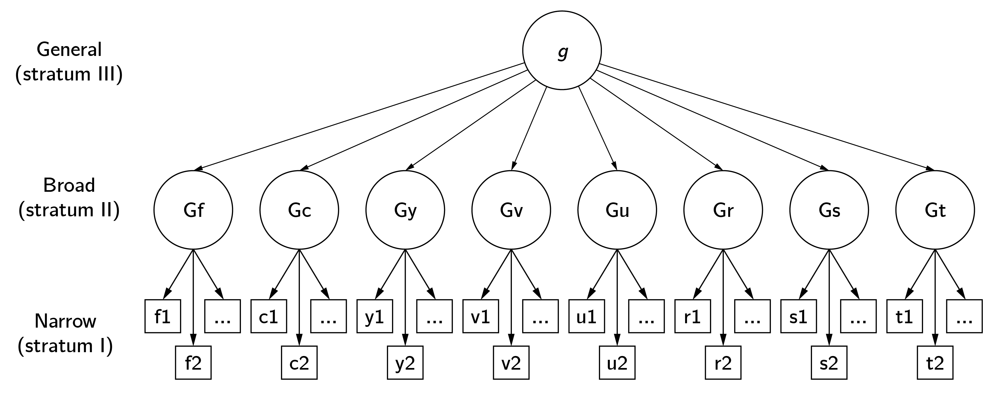
このモデルは、観察された IQ における集団差や介入戦略への含意とされるものを含め、広く批判されてきた (Fraser 2008)。私の見解では、批判のいくつかは正当でない。たとえば、正の多様体は非常に頑健で広く再現された経験的現象である (Nisbett et al. 2012)。含まれる特定の検査はそれほど重要でない。すなわち、創造性、感情知能、あるいは社会的知能のどんな信頼できる測定も、他の IQ 下位検査と正に相関する。統計技法としての因子分析にも大した問題はない。私にとって、\(g\) 理論の最も疑わしい側面は、それがそもそも本当の理論ではない、ということである。「部屋の中の象」という問いは単に、\(g\) とは何か、というものである。すべてを説明するこの単一の因子とは何でありうるのか。一世紀の研究は、この問いへの一般に受け入れられた答えを生み出していない。そしてこれは、心理学における多くの因子説明にとっての問題である（たとえば人格のビッグファイブ、精神病理の \(p\) 因子）。
因子説明がそれ自体で問題があるわけではないことに注意することが重要である。私は心臓病、たとえば緩んだ心臓弁の例を用いるのを好む。これは、息切れ、足首のむくみ、めまい、急激な体重増加、そして胸部不快感といった症状をもたらす。これらの症状の間の関係は、心臓病という基礎的な因子によって説明される。単一の症状を治療することはその症状にいくらかの緩和を与えるかもしれないが、それ以上ではない。原因に介入することだけが真の変化をもたらす。これは因子モデルの反映的（reflective）解釈の一例である。因子が単なる指標であって共通原因でないとき、私たちは形成的（formative）因子について語る。Figure fig-ch6-img5-old-74 は因子モデルの反映的解釈と形成的解釈を説明している。
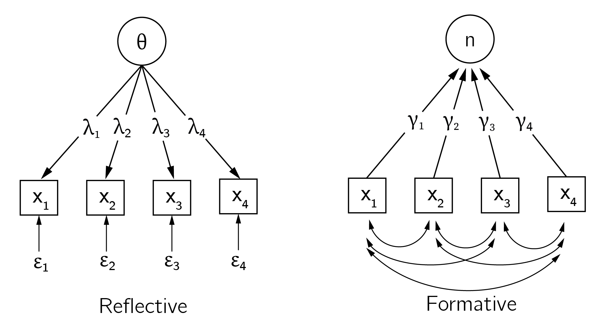
統計的には、これらの因子モデルは等価である。したがって、因子モデルが知能データにうまく当てはまるという事実は、統計的因子 \(g\) の身分について何も教えてくれない。
\(g\) は共通原因なのか、それとも単なる指標なのか。
6.3.1.2 相利共生モデル
van der Maas et al. (2006) で、私たちは因子モデルの形成的解釈と整合する代替的なモデルを提案した。その考えは、私たちの認知システムが、経験と訓練に基づく自己触媒的な過程で、しかしまた発達する認知機能間の弱い正の相互的相互作用のために、時間とともに発達する多くの機能から成る、というものである（figure fig-ch6-img6-old-75）。 そのような相利共生的な相互作用の例は、短期記憶と認知戦略の間、言語と認知の間（統語的および意味的ブートストラッピング）、認知とメタ認知の間、行為と知覚の間、そしてパフォーマンスと動機づけの間のものである (van der Maas et al. 2017)。たとえば、赤ん坊は繰り返し手を伸ばし、手と指の運動を協調させ、握りを調整することで物体を掴むことを学ぶ。これらの行為を通じて、彼らは感覚フィードバックを集め、相互的な学習過程で知覚を洗練し掴む技能を改善する (Needham and Nelson 2023)。
これらの相利共生的な相互作用は、典型的には因子モデルと結び付けられる相関を作り出しうる。
これをモデル化するために、私たちは相利共生的なロトカ–ヴォルテラモデルを用いた。
\[ \begin{gathered} \frac{dX_{i}}{dt} = a_{i}X_{i}\left( 1 - \frac{X_{i}}{K_{i}} \right) + a_{i}\sum_{\begin{array}{r} j = 1 \\ j \neq i \end{array}}^{W}\frac{M_{ij}X_{i}X_{j}}{K_{i}}\ \ \ for\ i = 1..W, \\ K_{i} = c_{i}G_{i} + \left( 1 - c_{i} \right)E_{i}, \end{gathered} \tag{6.1}\]
ここで \(X_{i} \ldots X_{w}\) は認知過程を、\(\mathbf{a}\) は成長率を、\(\mathbf{K}\) は各 \(X_{i}\) の限られた資源（遺伝的な部分（\(\mathbf{G}\)）と環境的な部分（\(\mathbf{E}\)）の重み付き和）を、そして \(\mathbf{M}\) は相互作用行列を表す。第二の方程式は、遺伝と環境の単純な線形効果を仮定して、双生児研究におけるいくつかの典型的な現象、たとえば年齢とともに遺伝率が増加することを説明するのに十分である (van der Maas et al. 2006 を参照)。相利共生モデルへの批判と検証、そして代替物は van der Maas et al. (2017) で論じられている。Knyspel and Plomin (2024) は、双生児データを用いて相利共生モデルと因子モデルを比較している。ここでは技術的な側面に焦点を当てる。
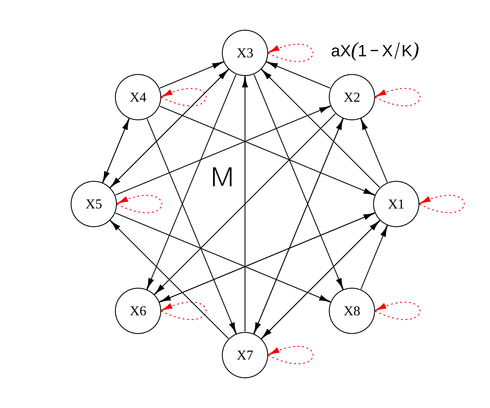
\(M\) が主に負の値を含むとき、このモデルは競争的ロトカ–ヴォルテラモデルとして知られる。この場合、リミットサイクルや他の非線形現象が生じうる (Hirsch 1985)。正の \(M\) をもつ相利共生的な変種については、正の状態への収束か指数関数的成長のいずれかが見られる。この指数関数的成長は、ロトカ–ヴォルテラ相利共生モデルの不運な側面である。ロバート・メイはこの効果を相互の恩恵の乱痴気騒ぎ（an orgy of mutual benefaction）と有名に記述した (May, Oxford, and McLean 2007)。これは自然界で見られるものではなく、あらゆる種類の解決策が提案されてきた (Bascompte and Jordano 2013)。
Grind における相利共生モデルは次のように指定される。
mutualism <- function(t, state, parms){
with(as.list(c(state, parms)),{
X <- state[1:nr_var]
# using matrix multiplication:
dX <- a * X * (1 - X/k) + a * (X * M %*% X)/k
return(list(dX))
})
}正の多様体のシミュレーションには、このモデルを複数の人について実行し、各人について何らかの時点の後（tmax = 60）の \(X\) の値を集めることが必要である。それから相関を計算し、それらが正であるかどうかを確認できる（figure fig-ch6-img7-old-76）。各人について \(a\)、\(K\)、\(X\) の初期値を再サンプリングするが、\(M\) は人にわたって同じである。\(M\) の値は高く設定しすぎるべきではないことに注意しよう。さもなければメイの相互の恩恵の乱痴気騒ぎに行き着く。本章の第二の部分では、このモデルでより多くのデータを生成し、ネットワークモデルと因子モデルを当てはめる。
layout(matrix(1:2, 1, 2))
nr_var <- 12 # number of tests, abilities (W)
nr_of_pp <- 500
data <- matrix(0, nr_of_pp, nr_var) # to collect the data in the simulation
M <- matrix(.05, nr_var, nr_var)
M[diag(nr_var) == 1] <- 0 # set diagonal of M to 0
for(i in 1:nr_of_pp){
# sample a,K, starting values X from normal
# distributions for each person separately
# note M is constant over persons.
a <- rnorm(nr_var, .2, .05)
k <- rnorm(nr_var, 10, 2)
x0 <- rnorm(nr_var, 2, 0.1) # initial state of X
s <- x0; p <- c() # required for grind
# collect data (end points) and plot person 1 only:
data[i,] <- run(odes = mutualism , tmax = 60,
timeplot = (i==1), legend = FALSE)
}
hist(cor(data)[cor(data) < 1], main = 'positive manifold',
xlab = 'between test correlations',
col = 'grey50') # positive manifold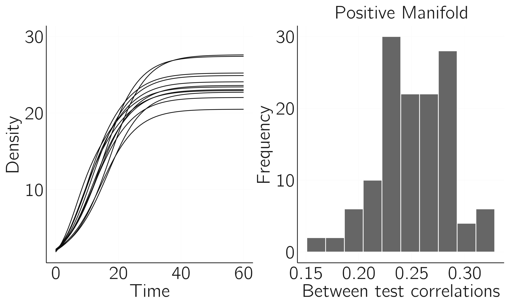
6.3.1.3 異常な発達
van der Maas et al. (2017) で、このモデルはいくつかの仕方で応用されている。たとえば、流動性技能を結晶性能力に投資するというキャッテルの考え（sec-Closing-Remarks で論じた）を組み込むことによってである。最近の論文で、de Ron et al. (2023) は、異常な発達の異なるパターンを説明するために、資源競争を伴う相利共生モデルを拡張している。 モデリングの過程で、私たちは興味深い洞察に至った。乏しい資源（時間、お金、教育的支援）をめぐる競争があると仮定すれば、過剰特化が既定の結果でありうるので、説明を必要とするのは「正常な」発達のほうである。その理由は数理生物学からの洞察である。すなわち、生態系の多様性はしばしば不安定である。 すでに見た一例は、寄生者によるハイパーサイクルの不安定性である（sec-Biology）。これは通常、資源競争モデルで研究される。
異常な発達の一つのパターンは過剰特化であり、これは自閉症のまれな変種と結び付けられている。生態系の多様性はしばしば不安定である。
個体群生物学における基本的な資源競争モデル (Tilman, Kilham, and Kilham 1982) では、ある種（\(1...W\)）の成長は、その現在の大きさ \(X_{i}\) と、資源 \(R_{j} (1...V)\) にわたる和によって決まる。パラメータ \(\mu_{ij}\) は、種 \(i\) が資源 \(j\) からどれだけ利益を得るかを決める。資源が利用できなければ、\(X_{i}\) は死亡率 \(d_{i}\) で死滅する。
資源 \(R_{j}\) の成長は二つの部分から成る。第一の部分は、\(r_{\max}\) まで \(r\)（すなわち凹関数の急峻さ）によって決まる凹関数による成長をモデル化する。第二の部分は、\(X_{i}\) による資源の消費による枯渇であり、速度 \(b_{ij}\) でなされる。二つの微分方程式がこのダイナミクスを指定する (このモデルを数値的に研究するための Grind コードについては de Ron et al. 2023 の付録を参照)。
\[ \begin{gathered} \frac{dX_{i}}{dt} = X_{i}(\sum_{j = 1}^{V}{\mu_{ij}R_{j} - d_{i}}), \\ \frac{dR_{j}}{dt} = {r\left( r_{\max} - R_{j} \right) - R}_{j}\sum_{i = 1}^{W}{b_{ij}X_{i}}. \end{gathered} \tag{6.2}\]
このモデルおよび関連するモデルについて示されているのは、資源の数より多くの種は生き残らない、ということである。ロバート・メイのもう一つの有名な引用は次のとおりである。「多様性と複雑性の増大が高められた群集の安定性を生む、と保証する心地よい定理はない。むしろ、数学的な一般性として、その逆が真である。したがって課題は、持続する自然系における安定をもたらす巧妙な戦略を解明することである。これらの問いに単一の単純な答えはないだろう」（p.174、2001年版）。したがって、限られた数の資源（時間、お金、教育的支援）が与えられれば、わずかな技能への早期の特化を予期すべきである。
生物学者はこの問題に対処するためにいくつものメカニズムを提案してきた (Meena et al. 2023)。de Ron et al. (2023) で、私たちは三つのメカニズムを加えた。すなわち、ロジスティック項をもつ能力 \(X\) の密度依存の成長（sec-The-LotkaVolterra-models を参照）、相利共生モデルにおけるような能力間の相利共生、そして成長依存の資源の枯渇である。後者の考えは、能力の成長は多くの資源を要するが、維持ははるかに少ない、というものである。算数やチェスを学ぶには多くの努力が要るが、いったんある水準の習熟に達すると、さらなる訓練なしにおおむねその水準にとどまる（残念ながら、体調についてはこうはいかない）。
私たちは、これらのメカニズムの組み合わせが、いくつかの相関する能力の均衡した成長を許すことを示している。特別に選ばれたパラメータ設定は、異常な発達の異なるパターン（過剰特化や遅延した発達など）をもたらす。最終的なモデルは次のとおりである。
\[ \begin{gathered} \frac{dX_{i}}{dt} = X_{i} (\sum_{j=1}^{V} \mu_{ij} R_j \overbrace{(1- \frac{X_i}{K_i})}^{\text{Logistic growth}} - d_i) + \overbrace{ \sum_{l=1}^{W} M_{il} X_{i} X_{l} / K_{i} }^{\text{Mutualism}}, \\ \frac{dR_{j}}{dt} = r(r_{max}-R_j)- R_j \sum_{i=1}^{W} b_{ij} \begin{cases} \frac{dX_{i}}{dt}, & \text{if growth-dependent depletion} \\ X_{i}, & \text{otherwise} \end{cases} \end{gathered} \tag{6.3}\]
6.3.1.4 知能の配線
相利共生モデルの一つの限界は、ノードの活性化のみが更新されることである。ネットワークの重みと構造は固定されている。これはいくつかの発達現象を説明するのに十分かもしれないが、究極的には満足のいくものではない。ニューラルネットワークの学習におけるように、リンク自体が適応可能であるべきである。重みの更新の形での学習の一例は、イジング態度モデルに関する sec-Ising-attitude-model で提示する。
Savi et al. (2019) は、ノードとリンクの両方が更新される場合を考えている。 たとえば、新たな事実（1 + 1 = 2）と手続き（足し算）が算数を学ぶ過程で発達する。これらのノード間のリンクが忘却を防ぐかもしれない。私たちはフォルトゥイン–カステレイン（Fortuin—Kasteleyn）モデル、すなわちイジングモデルの一般化を用いる。そこではノードとリンクの両方が確率変数である。このモデルの重要な性質は、二つの能力が結合しているときはいつでも、それらは必然的に同じ状態にある、すなわち両方存在するか両方存在しないかのいずれかである、ということである。それは、知能の正の多様体と階層的因子構造の倹約的な説明を提供する。動的な変種は、マタイ効果、すなわち発達の過程における能力の個人差の増大への説明を示唆する。
認知的成長は、発達の間に新たなノードとリンクが加えられる過程である。
しかし、フォルトゥイン–カステレインの性質をもつ成長するネットワークを作ることは難しい。この問題の単純な例はランダムネットワークである。ランダムネットワークでは、二つのノードが結合する確率が一様である。しかし、そのようなネットワークに新たなノードを加え、それらを同じ確率で既存のノードに結ぶと、既存のノードは平均してより多くの結合をもつことになる。したがって、新たなノードを加えることはネットワークの一様なランダムさを破壊する。すなわち、二つのノードが結合する確率はもはやノードにわたって一様でない。そのようなネットワークは非平衡ネットワークである (Dorogovtsev and Mendes 2002)。平衡を達成するための再配線アルゴリズムは存在するが、自明ではない。
6.3.2 症状ネットワーク
精神病理へのネットワークの視点では、精神障害は相互作用する症状のシステムとみなせる（figure fig-ch6-img8-old-77）。ネットワーク理論は、精神障害を、フィードバックループを通じて相互作用して自己維持的な症候群の布置を作り出す症状の複雑ネットワークとして概念化する (Borsboom 2017)。
精神障害は、高度に相互接続された症状のネットワークの代替的な安定状態として理解できる。
相利共生モデルと同様、これは共通原因の見方への代替物である。うつ病は、脳の何らかの機能不全、ホルモンの調節不全、あるいは遺伝的欠陥によって引き起こされるかもしれない。しかし、一般知能と同様、そのような共通原因はまだ見つかっていない。薬はある程度効くが、ほとんどの介入も、プラセボや待機リストでさえ効く (Posternak and Miller 2001)。私たちは、精神病理の \(p\) 因子説明への代替物として明示的にネットワークアプローチを提供した (van Bork et al. 2017)。3 それは、一般知能の \(g\) 因子と概念的に平行だと考えられているので、\(p\) 因子と呼ばれる (Caspi et al. 2014)。そして、再び、\(p\) が何でありうるかを誰も知らないようである。
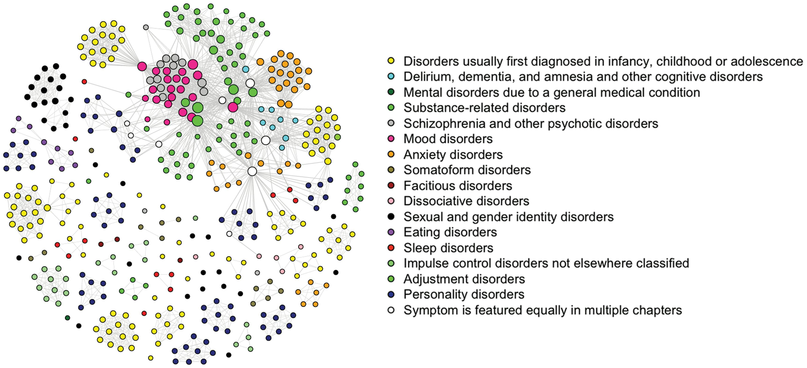
この理論的進歩の欠如がネットワーク理論の発展を促した (Cramer et al. 2010; Cramer et al. 2016)。本章のはじめに述べたように、この研究の系譜は人気を得た。この仕事のほとんどはデータ分析的な研究から成る。最も単純な場合、症状の重さを尋ねる質問紙が、人々の集団、時には患者、時には障害に苦しむ人と苦しまない人の混合に施行される。本章で後に論じるさまざまな心理測定学的なアプローチが、ネットワークをデータに当てはめるために用いられる。このようにして、精神病理的ネットワークの構造を理解することを学ぶ。この仕方で併存疾患をモデル化することが可能である (Cramer et al. 2010; Jones, Ma, and McNally 2021)。 大うつ病と全般性不安障害の場合、睡眠問題が典型的な橋渡し症状であるように思われる (Blanken et al. 2018)。
併存疾患は、ネットワークのクラスター間の橋渡しをする症状によってモデル化される。
最も人気のある応用は、どの症状が障害に中心的であるかを検出することである (Fried et al. 2016)。しかし、横断的データに基づく中心性分析には限界がある (Bringmann et al. 2019; Spiller et al. 2020)。これは、しばしば経験サンプリング法で得られる時系列データを用いて個人のネットワークに焦点を当てる一つの理由である。再び、これらの技法はまだ開発中であり、問題がないわけではない (Dablander and Hinne 2019; Haslbeck and Ryan 2022)。精神病理へのネットワークアプローチのレビューについては、Robinaugh et al. (2020) を参照。
実際のモデルを構築することに関しては、それほど多くの仕事はなされていない。Cramer et al. (2016) で、私たちは、症状がオンかオフかを表す 0 と 1 のノード値をもつイジング型のモデルを提案した。ノードは、ロジスティック関数 \(P = 1/(1 + e^{b_{i} - A_{i}^{t}})\) で計算される確率に基づいてオンとオフになった。\(A_{i}^{t}\) は他の結合したノードからの重み付き入力の和に等しく、\(b_{i}\) は通常はノードを 0 の状態に保つノード固有の閾値である。このモデルの強い点は、結合と閾値がデータから推定されたことである。このモデルは結合性仮説の起源である。 症状のネットワーク内の高い結合性は、より持続的で重い障害をもたらしうる (議論については Elovainio et al. 2021 を参照)。
結合性仮説は、これらの結合の強さが障害の発症と維持をもたらしうる、と示唆する。
閾値は一般に負である（ノードの 0 の状態が既定の状態である）ので、うつ病を代替的な安定状態としてもつには十分な結合性が必要である。このモデルの一つの限界は、それがイジングモデルに関係するにもかかわらず、正確なダイナミクスがよく理解されていないことである。
同様のアプローチが Lunansky et al. (2022) によって、レジリエンスを定義し介入標的を評価するために用いられた。 これは NetLogo の「Vulnerability to Depression」モデルで見られる（figure fig-ch6-img9-old-78 を参照）。因果ループ図に基づくもう一つの関連するネットワークモデリングのアプローチが Wittenborn et al. (2016) で提案されている。
レジリエンスとは、摂動から回復し現在の平衡を維持するシステムの能力である。
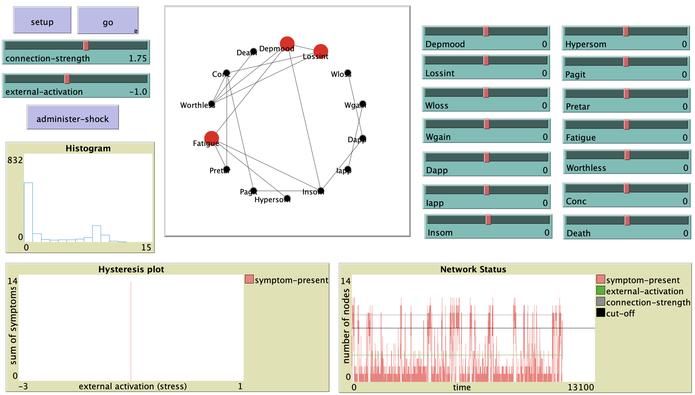
レジリエンスとの結び付きは興味深い。動的な観点では、レジリエンスは健全なまたは不健全な状態とではなく、これらの状態の安定性と結び付けられる (Kalisch et al. 2019)。sec-The-cusp-catastrophe で、より浅い極小は準安定状態と呼ばれる。これらの状態は、大域的に安定な状態よりもレジリエンスが低い（figure fig-ch6-img10-old-79）。
これは摂動と介入の間の区別を示唆する。介入によって、私たちは、健全な状態への持続可能な変化を許すように平衡状態のランドスケープを変える。摂動（短い介入、または正または負の出来事）は、どちらの状態がよりレジリエントかに応じて、恒久的な効果も一時的な効果ももちうる。figure fig-ch6-img10-old-79 の上のパネルに示された状況では、それが治療であれ代替物であれ（あるいは待機リストにいることでさえ）、どんな摂動も効く。左下の状況では、いかなる介入も持続的な効果をもたない。このレジリエンスの分析は、介入効果の研究の一貫しない結果を理解するのに役立つかもしれない。（異常分散のようなカタストロフィ・フラグを用いて）不健全な状態のレジリエンスを監視することは、介入のタイミングにとっても重要かもしれない (Hayes and Andrews 2020)。禁煙の試みのような失敗した介入は、不健全な状態を強化する可能性が高い (Vangeli et al. 2011)。
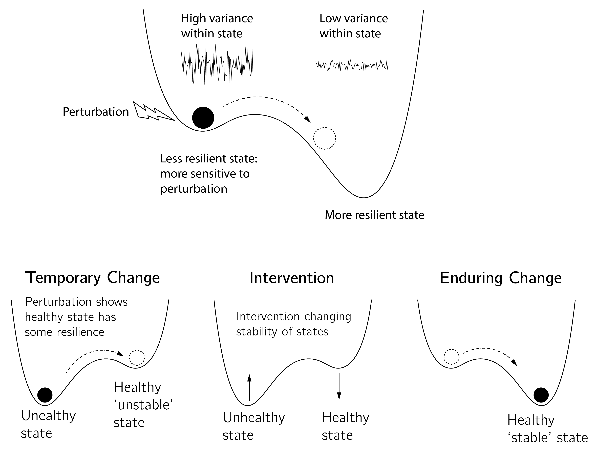
6.3.3 イジング態度モデル
ネットワークアプローチは、知能研究と精神病理の研究の外の多くの他の領域にも応用されてきた。例には、情動 (Lange and Zickfeld 2021; Treur 2019)、人格 (Costantini et al. 2015; Cramer et al. 2012)、興味 (Sachisthal et al. 2019)、合理的選択からの逸脱 (Kruis et al. 2020)、そして組織行動 (Lowery, Clark, and Carter 2021) がある。それが新たな理論へと発展させられた一つの領域は態度研究である。
人々は多くの態度をもつ——食べ物、政治、他人、ホラー映画、警察などについて。それらは私たちが決定を下すのを助け、私たちの行動を導く。態度は非常に安定で多面的でありうるが、一貫性がなく取るに足らないものでもありうる。社会心理学は長い間態度を研究しており、多くの洞察と理論が発展させられてきた。
態度理論の形式化は、コネクショニスト説明によって支配されてきた (Monroe and Read 2008; Van Overwalle and Siebler 2005)。並列分散処理（PDP）の枠組みで開発されたコネクショニストモデルでは、態度単位（たとえば信念）が結合したネットワークを形成し、その活性化（通常は \(-1\) と \(1\) の間）は、他の単位からの内的入力の重み付き和と外的入力に基づいて更新される。これらの重みすなわち結合は、デルタ規則（ネットワークの生み出す出力と期待される出力の間の差に基づく教師あり学習の規則）かヘッブの規則のいずれかに従って更新される。この設定で、これらのモデルは態度研究におけるいくつもの現象を説明できる。もう一つのネットワーク説明が社会学で提出されている (DellaPosta 2020)。
態度は複雑な構成体である。認知的不協和、不均衡、アンビバレンス、そして政治的分極化といった典型的な現象は、ネットワークモデルによってよく記述できる。
本節では、一連の最近の論文で開発された、イジングモデルを用いた私たちの態度へのネットワークアプローチを論じる。コネクショニストの PDP モデルに対するこのモデルの利点は、それが基本的な仮定から導かれ、数学的によりよく理解され、シミュレートしやすく、温度パラメータの心理学的な解釈を提供し、そしてデータに当てはめられることである (Dalege et al. 2017)。
イジングモデルは、態度の三部構成因子モデルへの代替物として開発された。三部構成因子モデルでは、態度、すなわち潜在因子が、一般知能のキャッテル–ホーン–キャロルモデルと同様に、それぞれ観察された反応を説明する低次の認知的、感情的、行動的因子から成る。 因果的態度モデル (Dalege et al. 2016) は、認知的、感情的、行動的成分におけるこの区別を保つが、今やそれらをネットワーク内のクラスターとして概念化する。ノードは単一の感情、信念、そして行動を表す。Dalege et al. (2018) で、このネットワークモデルは、注意を（温度の逆数の）等価物とするイジングモデルの形で形式化される。すなわち、高い注意はネットワークを「凍結」させ、態度の一貫した安定な正または負の状態（「単なる思考効果」）をもたらす。
態度は、態度対象に対する感情、信念、そして行動のネットワークである。注意は（逆）温度に等置される。
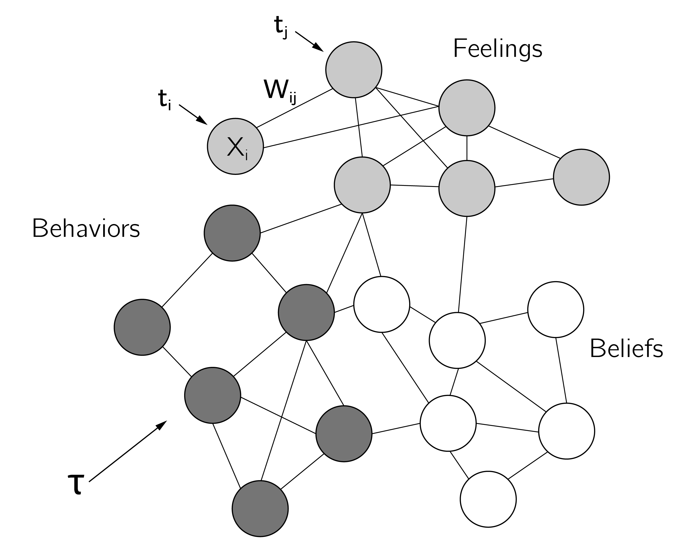
6.3.3.1 モデルの設定
イジング態度モデルの基本的な仮定は、ノードが二値であること（たとえば赤肉を食べるか食べないか）、ノードが互いに因果的に影響すること、そしてそれらが特定の閾値をもつこと（うつ病のモデルにおけるように）である。外部場（肉を減らすキャンペーン）もノードに影響しうる。ノードの他のノードへの、そして外部場への揃いは、態度対象への注意 \(A\) に依存する。
これらの単純化する仮定——さまざまな仕方で緩められる——が与えられれば、ランダム場イジングモデルに至る (Fytas et al. 2018)。このモデルは、第一の項が今や二つの成分、すなわち一般的な外部効果（\(\tau\)）とノード固有（\(t_{i}\)）の閾値の効果（「私は本当に鶏肉の味が好きなだけ」）をもつことを除けば、第5章 sec-Physics で記述したイジングモデルとそれほど変わらない。ランダム場イジング態度モデルは、それから次のように定義できる。
\[\begin{array}{r} H\left( \mathbf{x} \right) = - \sum_{i}^{n}{(\tau + {t_{i})x}_{i}} - \sum_{<ij>}^{}{{W_{ij}x}_{i}x_{j}}, \end{array} \tag{6.4}\]
\[\begin{array}{r} P\left( \mathbf{X} = \mathbf{x} \right) = \frac{\exp\left( - AH\left( \mathbf{x} \right) \right)}{Z} \end{array}. \tag{6.5}\]
第5章で紹介した元のイジングモデルとのもう一つの違いは、相互作用が今や重み付けされ、負にすらなりうることである。主たる技術的問題は同じである。ある状態の確率を計算するには、\(Z\)、すなわち \(\sum_{< \mathbf{x} >}^{}{exp(- AH\left( \mathbf{x} \right))}\)、すなわちすべての可能な状態（\(2^{n}\)）にわたる和を計算しなければならない。大きな \(n\) の値については、これは実行不可能である。一つの解決策は、ランダムな初期状態を取り、平衡状態に達するまで状態を更新するのにグラウバーダイナミクスを用いることである。グラウバーアルゴリズムは \(Z\) を必要としない。より速いがより直観的でないアルゴリズムがあり、最も人気があるのはメトロポリス–ヘイスティングスアルゴリズムであり、これは第5章 equation eq-ch5n-3-old-19 で提示したグラウバーダイナミクスをわずかに修正する。
第5章（sec-Physics）で論じたように、イジング型モデルのダイナミクスを理解するもう一つのアプローチは平均場近似である。これには、ネットワークが等しい閾値で完全かつ一様に結合しているという仮定（キュリー–ワイスモデルとして知られる）が必要である。この近似では \(W_{ij} = c\)（すべて等しい）であり、\(x_{j}\) はその平均値に置き換えられ、これがエネルギー関数を大いに単純化する。単純な完全結合イジングモデルのダイナミクスが、外部場を正規変数、逆温度を分裂変数とするカスプによってよく近似されることが示せる。
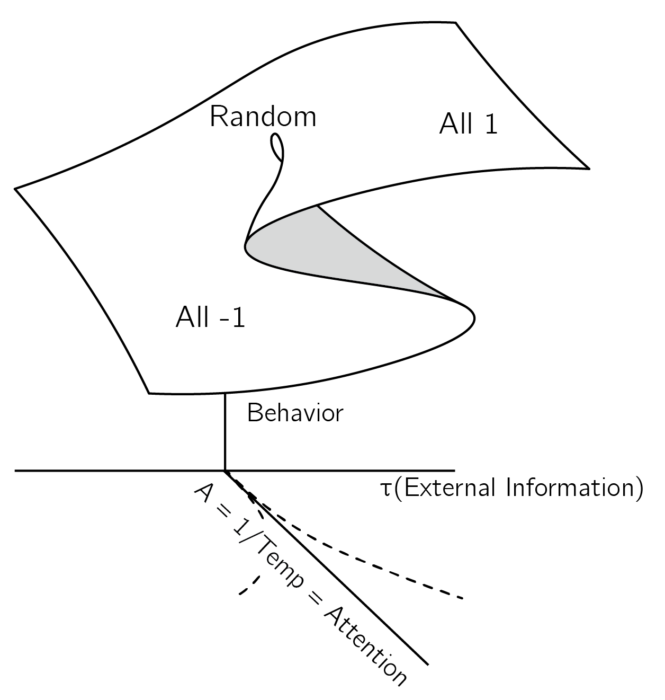
これは重要な結果である。というのも、それは態度研究におけるカスプの使用（figure fig-ch3-img13-old-25 を参照）をより現象論的でないものにするからである。カスプは今やより基本的な原理から導かれる（figure fig-ch6-img11-old-80）。ここでは分裂変数として注意を用いるが、第3章では関与を用いたことに注意しよう。これらは密接に関連する概念であり、違いは時間スケールにある。注意は秒や分で変化しうるが、関与は週や月で変化しうる。私は注意と関与を互換的に用いる。
この平均場近似は非常に頑健である。van der Maas, Dalege, and Waldorp (2020) で、私たちは、より少ない結合と、一部が負である重みの分布をもつネットワークも、依然としてカスプによってよく記述されることを、シミュレーションを通じて示している。これはいくつかの R コードで、あるいは NetLogo で容易に確認できる。私たちは R の IsingSampler パッケージを用いる。
6.3.3.2 シミュレーション
IsingSampler 関数はメトロポリス–ヘイスティングスアルゴリズムを \(nIter\) 回実行し、最後の状態を返す。それは \(N\) 回の実行について複数の最終状態を返せる。入力として、それはリンクの行列（\(\mathbf{W}\)）を取る。これはキュリー–ワイスモデルについては対角に 0 をもち一定であるべきである。各ノードの thresholds は等しくあるべきである。元々は温度の逆数（\(1/T\)）である Beta は注意を表す。beta（注意）を変える効果が figure fig-ch6-img8-old-77 に示されている。
library("IsingSampler")
n <- 10 # nodes
W <- matrix(.1, n, n); diag(W) <- 0
tau <- 0
N <- 1000 # replications
thresholds <- rep(tau, n)
layout(t(1:2))
data <- IsingSampler(N, W, nIter = 100, thresholds,
beta = .1, responses = c(-1, 1))
hist(apply(data, 1, sum), main = "beta = .1", xlab = 'sum of x')
data <- IsingSampler(N, W, nIter = 100, thresholds,
beta = 2, responses = c(-1, 1))
hist(apply(data, 1, sum), main = "beta = 2", xlab = 'sum of x')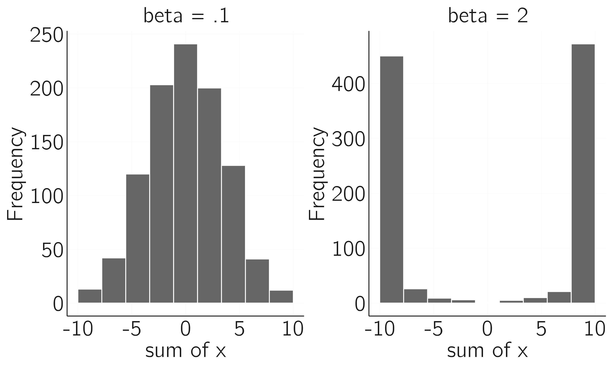
Dalege and van der Maas (2020) で、私たちは態度の潜在的（暗黙的）測定と明示的測定の間の違いをシミュレートした。その考えは、個々の閾値が、注意が中程度に低いときにのみ検出できる態度についての情報を含む、というものである。注意が高すぎるとき、ノード間の揃いが閾値を支配する（figure fig-ch6-img13-old-82）。実際、態度の潜在的（間接的）測定では、注意はインタビューのような明示的測定よりもはるかに低い。これは次のようにシミュレートできる。
layout(1)
N <- 400; n <- 10
W <- matrix(.1, n, n); diag(W) <- 0
thresholds <- sample(c(-.2, .2), n,
replace = TRUE) # a random pattern of thresholds
dat <- numeric(0)
beta.range <- seq(0, 3, by = .05)
for(beta in beta.range){
data <- IsingSampler(N, W, nIter = 100, thresholds,
beta = beta, responses = c(-1, 1))
dat <- c(dat, sum(thresholds * apply(data,2,sum))) # measure of alignment
}
plot(beta.range, dat, xlab = 'beta', ylab = 'alignment with thresholds',
bty = 'n')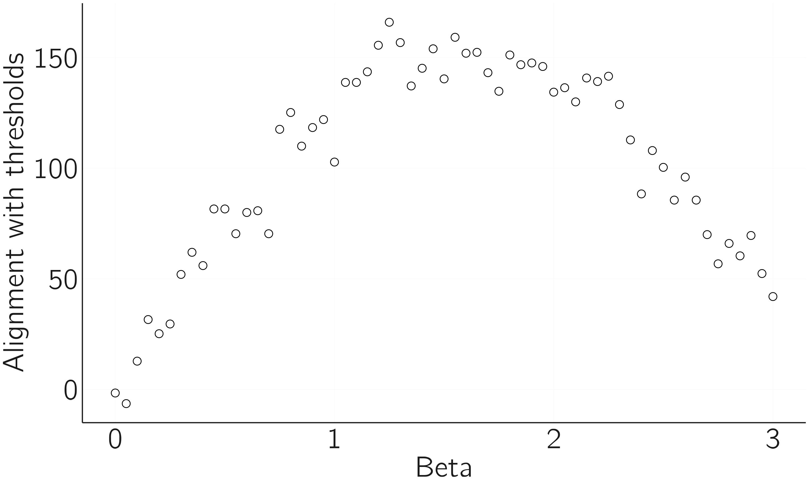
中程度の注意について、閾値との一致が最も高いことが見て取れる。注意が 0 または非常に低いとき、ノードはランダムに振る舞い、閾値と相関しない。注意が非常に高いとき、ノード固有の閾値の効果は他のノードの集団的な効果によって覆い隠される。潜在的測定の主要な問題は、低から中程度の注意について、ネットワークがかなりノイズを含み、測定の信頼性が低くなる、ということである。これが、この論文が「ノイズを含むことによって正確（Accurate by Being Noisy）」と呼ばれる理由である。
6.3.3.3 学習
コネクショニスト態度モデルは「学習」、すなわち重みの調整ができる。これはヘッブ学習を用いることでイジング態度モデルでも行える。ヘッブ学習、すなわち「ともに発火するものはともに結線する」は、次のように定式化できる。
\[\begin{array}{r} \mathrm{\Delta}W_{ij} = \epsilon\left( 1 - \left| W_{ij} \right| \right)x_{i}x_{j} - \lambda W_{ij}, \end{array} \tag{6.6}\]
これは重みの変化を定義する。重みは、それが結ぶノードが一貫して両方 \(1\) か両方 \(-1\) であれば \(1\) まで成長する。それらが一貫して値が異なれば、重みは \(-1\) まで成長する。ノードが一貫せずに振る舞えば、最後の項のために重みは \(0\) まで縮む。
R では、これは次のように実装できる。
library(qgraph)
hamiltonian <- function(x, n, t, w){
-sum(t * x) - sum(w * x %*% t(x)/2)
}
glauber_step <- function(x, n, t, w, beta){
i <- sample(1:n, size = 1) # take a random node
# construct new state with flipped node:
x_new <- x; x_new[i] <- x_new[i] * -1
# update probability
p <- 1/(1 + exp(beta * (hamiltonian(x_new, n, t, w) -
hamiltonian(x, n, t, w))))
if(runif(1) < p) x <- x_new # update state
return(x)
}
layout(t(1:2))
epsilon <- .002; lambda <- .002 # low values = slow time scale
n <- 10; W <- matrix(rnorm(n^2, .0, .4), n, n)
W <- (W + t(W)) / 2 # make symmetric
diag(W) <- 0
qgraph(W); title('before learning')
thresholds <- rep(.2, n)
x <- sample(c(-1, 1), n, replace = TRUE)
for(i in 1:500){
x <- glauber_step(x, n, thresholds, W, beta = 2)
# Hebbian learning:
W <- W + epsilon * (1 - abs(W)) * outer(x, x, "*") - lambda * W
diag(W) <- 0
}
# label switching (scale all nodes to positive):
W <- x * t(x * W); x <- x * x
qgraph(W); title('after learning')Figure fig-ch6-img14-old-83 はこのシミュレーションの結果を示している。
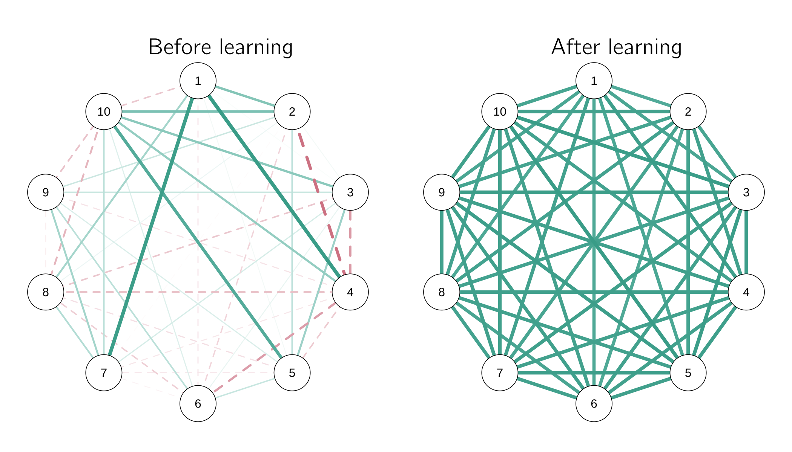
この場合、私たちはグラウバーダイナミクス（equation eq-ch5n-3-old-19）を用いてノードの値を更新したい。これは特定の状態のエネルギーの計算を用いる。両方の関数（glauber_step() と hamiltonian()）が R コードに加えられている。
ヘッブ学習のために、ネットワークは不均衡なネットワーク（ランダムな結合）から一貫して均衡したネットワークへと進化する。 学習なしには、態度ネットワークを一貫して振る舞わせるには高い注意が必要である。学習イジング態度モデル（LIAM）では、重みは高い注意の期間に増加する。その利点は、後の場合には、一貫したネットワークの振る舞いにより少ない注意しか必要でない、ということである (Smal, Dalege, and Maas submitted)。このようにして、一貫するのに多くの注意を必要としない安定な態度を発達させられる。
強く均衡した態度ネットワークを発達させることには明確な利点がある。すなわち、それらは一貫するのに多くの注意を必要としない。
6.3.3.4 態度の安定性とエントロピーの尺度
態度の一貫性を定量化するために、ギブスエントロピーを計算できる (Dalege et al. 2018 の命題 I.2)。ボルツマンエントロピーは sec-Physics で、特定のマクロ状態が実現されうる仕方の数（\(W\)）の対数として定義された。それは特定の態度状態の非一貫性を測る (Dalege et al. 2018 の命題 I.1)。4 ギブスエントロピーは、各ミクロ状態が等しく確からしいと仮定しない点でより一般的である。 それは次のように定義される。
ギブスエントロピーは、異なるミクロ状態 \(\mathbf{x}\) にわたる確率分布を記述する。
\[\begin{array}{r} - \sum_{< \mathbf{x} >}^{}{P\left( \mathbf{x} \right)\ln{P\left( \mathbf{x} \right)}}. \end{array} \tag{6.7}\]
すべてのミクロ状態（\(2^{n}\)）にわたって和を取ることに注意しよう。小さなネットワークについては、この尺度は IsingSampler パッケージの IsingEntrophy() 関数を用いて計算できる。異なるエントロピーの尺度についてはさらに多くのことが言える。たとえば、シャノンエントロピー（情報理論における尺度）とギブスエントロピーは同じ数学的定義をもつが、異なる科学分野における完全に異なる推論の系譜から導かれる。エントロピーの尺度についての議論への入門は、ウィキペディアのエントロピーのページに見出される。
6.3.3.5 三重臨界性
新たな研究の方向は、三分のノード値（\(—1 ,0 , 1\)）をもつイジング型のモデルに関わる。物理学では、この場合は三重臨界イジングモデルないしブルーメ–カペルモデルとして知られる (Saul, Wortis, and Stauffer 1974)。物理学では、状態 \(-1\) と \(1\) は上または下を指す粒子のスピンを表しうるが、\(0\) は非磁性ないしスピンのない状態を表しうる。態度モデルでは、\(-1\) と \(1\) は賛成と反対の信念を表しうるが、\(0\) は中立的な信念を表す。このモデルのハミルトニアンは \(-1\) と \(1\) の状態へのペナルティを含む。
\[\begin{array}{r} H\left( \mathbf{x} \right) = - \sum_{i}^{n}{\tau x_{i}} - \sum_{< i,j >}^{}{x_{i}x_{j}} + D\sum_{i}^{n}{x_{i}}^{2}. \end{array} \tag{6.8}\]
これを equation eq-ch5n-1-old-17 と比較できる。最後の項は、\(0\) の状態に対して \(-1\) と \(1\) の状態にペナルティを課す（エネルギーを増加させる）。
このモデルのダイナミクスはより込み入っている。それは三重臨界点をもつ蝶カタストロフィに似ている (Dattagupta 1981)。ポテンシャル関数 \(V(X) = {- aX - \frac{1}{2}bX^{2} - \frac{1}{3}cX^{3} - \frac{1}{4}dX^{4} + \frac{1}{6}X}^{6}\) は、パラメータの値の特定の組み合わせについて三つの安定な固定点をもつ（sec-Higher-order-catastrophes とその章の蝶カタストロフィについての演習を参照）。これは態度のモデリングに関係する。というのも、それは関与した安定な中間の態度の立場の可能性を開くからである（figure fig-ch6-img15-old-84 を参照）。イジング態度モデルはこれを除外する。
イジング態度モデルでは、深く関与した人々は常に過激化するが、より進んだスピンモデルは関与した非党派的な立場を許す。
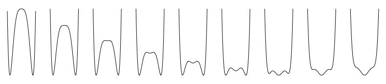
6.4 心理測定学的ネットワーク技法
これまで、認知心理学、臨床心理学、そして社会心理学の分野における理論的な心理学的ネットワークモデルの例を見てきた。しかし、そのようなモデルの人気の多くは、ネットワークを用いてデータを分析するために開発された心理測定学的なアプローチによるものである。過去十五年間で、あらゆる種類のデータと経験的な設定のための統計的アプローチの族が開発された。私たちの psychosystems グループ（psychosystems.org）は、『R によるネットワーク心理測定学——行動科学者・社会科学者のためのガイド（Network Psychometrics with R: A Guide for Behavioral and Social Scientists）』(Isvoranu et al. 2022) という本を出版した。この資料は強く推奨される。私は簡単な概観と、本章の第一の部分で提示したモデルに関連するいくつかの実践的な例に限る。
6.4.1 主な技法
『ネットワーク心理測定学』の重要な側面はネットワークの可視化、すなわちネットワーク構造の視覚的表現を作る過程である。これはデータの解釈を助ける。可視化のための主な R パッケージは igraph と qgraph である。両方のパッケージが多くの有用な関数を含む。
ネットワーク心理測定学のより高度な応用はネットワーク推定である。 ネットワーク推定に最も広く用いられる方法は、ガウス型グラフィカルモデル（パッケージ bgms、BDgraph、ggm、psychonetrics、qgraph、BGGM、huge）、偏相関ネットワーク（qgraph、qgraphicalmodels）、そしてイジングモデル（IsingFit、IsingSampler、rbinnet）である。mgm パッケージは、カテゴリカルなノードと連続値のノードの混合をもつ混合グラフィカルモデルを当てはめるのに用いられる。bgms パッケージはベイズ推定を適用し、欠けているリンクの検定を可能にする。huge パッケージは多くの変数間の条件付き依存構造を表すのに用いられ、変数の数が標本サイズよりはるかに大きいとき特に有用である。
ネットワーク推定は、どのノードが互いに結合しているか、そしてそれらの結合の強さを含む、ネットワーク構造を推定するために統計的方法を用いる。
推定には通常、中心性分析が続く。ネットワークで最も重要なノードは、その中心性の度合いに基づいて同定される。中心性は、あるノードがネットワーク内の他のノードにどれだけ結合しているかを測る。中心性の尺度には、とりわけ次数中心性、媒介中心性、橋中心性、そして固有ベクトル中心性が含まれる（パッケージ psych、networktools）。
もう一つの重要な段階はネットワーク比較である。 これは、ネットワーク並べ替え検定、ブートストラップ、そして調整分析といった技法を用いて行える（R パッケージ bootnet と NetworkComparisonTest）。
ネットワーク比較は、二つ以上のネットワークの構造を比較して、それらが互いに有意に異なるかどうかを判定する過程である。
時系列データがあるとき、あるいはネットワークに介入したとき、ノード間の因果関係を推論するネットワーク推論を行える。時系列のタイプ（\(N=1\) 時系列、\(N>1\) 時系列、パネルデータ）に応じて、異なるモデリングの選択肢とパッケージが利用可能である（パッケージ psychonetrics、mgm、graphicalVar、mlVar）。GVAR は、時間的関係の有向ネットワークである時間的ネットワークと、時間的関係を統制した後の同じ時間枠内の変数間の関連の無向ネットワークである同時的ネットワークを返す。
時系列ネットワーク推論は、変数間の相互作用と依存のパターンを同定するために逐次的なデータを分析することを含む。
ある種の技法を用いる理由の詳しい議論については、再び私たちの最近の本を参照されたい。ここで提供した簡単な概観はすぐに時代遅れになるかもしれない。CRAN Task View: Psychometric Models and Methods が最新の概観を与えてくれる。5 もう一つの選択肢は JASP を用いることである。6 JASP は、エリク・ヤン・ヴァーヘンマーカースの監督のもとで開発された、無料でオープンソースの統計分析プログラムである (Huth et al. 2023; Love et al. 2019)。それは R パッケージにアクセスするための使いやすいインターフェースである。 上で述べたネットワーク R パッケージの多くが JASP で利用可能である。7
頻度主義的なものもベイズ主義的なものも、すべての主要な統計分析が JASP で利用可能である。
最後に、意味ネットワーク分析に再び言及する。（R で利用可能な）統計的アプローチのレビューが Christensen and Kenett (2021) によって提供されている。
6.4.2 相利共生モデルの当てはめ
sec-Mutualism-model で、データをシミュレートするコードを提供した。これらのデータは JASP を用いて当てはめられる。先のコードを再実行し、次を加えることで、
write.table(file='mutualism.txt', data, row.names = FALSE, sep='\t')JASP で分析する準備のできたデータファイルが得られる。
JASP でこのファイルを開くと、データが見える。Network（Frequentist）タブで、すべての変数と EBICglasso オプションを選べ。EBICglasso は qgraph パッケージの R 関数である。それはガウス型グラフィカルモデルを計算し、リンクの推定を 0 に縮小するために LASSO 正則化を適用する (Friedman, Hastie, and Tibshirani 2008)。これは、予測的価値を失うことなく、多くの無関係なリンクの存在を防ぐ。あるいは、有意性検定やベイズ的手続きを用いることもできる。JASP では、偏相関オプションを用いることもできる。いくつかのオプションで遊び、追加のプロットを調べることを勧めた。
相利共生は正の多様体への代替的な説明であり、これは、そのようなデータへの因子モデルの当てはめが \(g\) 因子理論が正しいことを証明しない、ということを意味する。すべての \(M_{ij} = c\) とする単純な相利共生因子モデルが一因子モデルと等価であることが示せる (van der Maas et al. 2006)。これは、シミュレートされたデータに探索的一因子モデルを当てはめることで JASP で検証できる。因子負荷はすべて非常に似ているはずである。
論じたように、横断的ネットワークは効果の方向についての情報を提供しない。これは次のように例示できる。
M[,1] <- .2 # strong influence of X1 on all others
M[2,] <- .2 # strong influence on X2 by all others
M[diag(nr_var) == 1] <- 0 # set diagonal of m to 0コードを再実行し JASP で中心性プロットを作れば、横断的ネットワークにおける中心性分析のリスクが見られる。ノード 2 が最も中心的だが、シミュレーションから、これはそれが他のすべてによって影響されるためだと私たちは知っている。最も因果的な力をもつノード（ノード 1）は重要な中心的ノードとしては現れない。時系列データがあれば、効果の方向を推定できる。これを R で行う。
library("graphicalVAR")
# make time series for one persons with some stochastic effects
data <- run(odes = mutualism, tmax = 1000, table = TRUE,
timeplot = (i == 1), legend = FALSE,
after = "state<-state+rnorm(nr_var,mean=0,sd=1);
state[state<0]=.1")
data <- data[,-1]
colnames(data) <- vars <- paste('X', 1:nr_var, sep = '', col = '')
fit <- graphicalVAR(data[50:1000,], vars = vars, gamma = 0, nLambda = 5)
plot(fit, "PDC")
centralityPlot(fit$PDC)結果は figure fig-ch6-img16-old-85 に示されている。時系列アプローチだけが、可能な因果効果についての有用な情報を提供する。
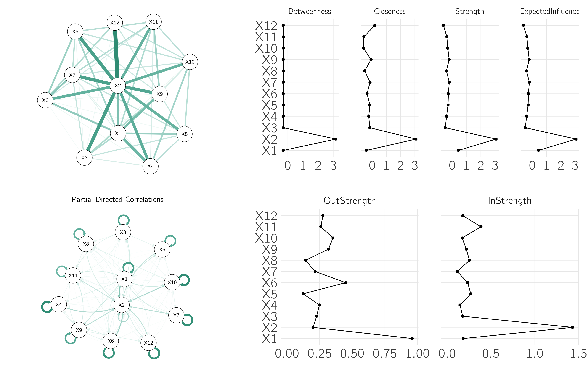
M 行列はさまざまな形をとりうる。典型的な多因子構造はブロック構造で達成できる。
set.seed(1)
factors <- 3
M <- matrix(0, nr_var, nr_var)
low <- .0; high <- .1 # interaction between and within factors
# loop to create M
cat <- cut(1:nr_var, factors)
for(i in 1:nr_var) {
for (j in 1:nr_var) {
if (cat[i] == cat[j])
M[i, j] <- high else M[i, j] <- low
}
}
M[diag(nr_var) == 1] <- 0 # set diagonal of m to 0JASP では、ネットワーク分析と検証的因子分析を行える。後者の場合、最初のウィンドウで「3 factors」を選び、モデルのオプションで「assume uncorrelated factors」を選べ。得られるプロットは figure fig-ch6-img17-old-86 のようになるはずである。
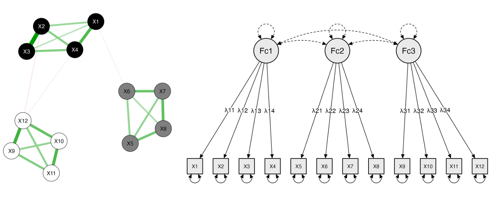
6.4.3 イジングモデルの当てはめ
IsingFit を用いれば、イジング態度モデルで生成した横断的データを容易に当てはめられる。Figure fig-ch6-img18-old-87 はモデルの良い当てはめを示している。この分析のコードは次のとおりである。
library("IsingSampler"); library("IsingFit")
set.seed(1)
n <- 8
W <- matrix(runif(n^2, 0, 1), n, n); # random positive matrix
W <- W * matrix(sample(0:1, n^2, prob = c(.8, .2),
replace = TRUE), n, n) # delete 80% of nodes
W <- pmax(W, t(W)) # make symmetric
diag(W) <- 0
ndata <- 5000
thresholds <- rnorm(n, -1, .5)
data <- IsingSampler(ndata, W, thresholds, beta = 1)
fit <- IsingFit(data, family = 'binomial', plot = FALSE)
layout(t(1:3))
qgraph(W, fade = FALSE); title("Original network", cex.main = 2)
qgraph(fit$weiadj, fade = FALSE); title("Estimated network", cex.main = 2)
plot(thresholds, type = 'p', bty = 'n', xlab = 'node',
ylab = 'Threshold', cex = 2, cex.lab = 1.5)
lines(fit[[2]], lwd = 2)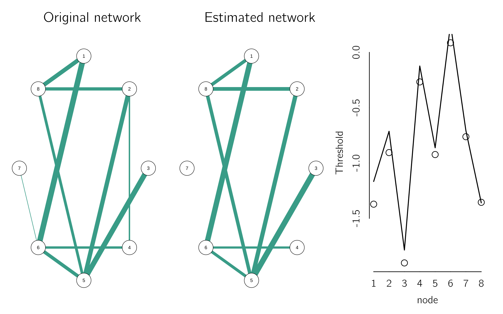
経験的な例が Dalege et al. (2017) で提供されている。オープンアクセスのデータ（\(N = 5728\)）は、バラク・オバマに対する評価的反応に関する 2012 年の American National Election Study に由来する。項目と略称は次のとおりである。
| 信念を測る項目 | 略称 |
|---|---|
| 「道徳的である」 | Mor |
| 「強い指導力を発揮するだろう」 | Led |
| 「あなたのような人々を本当に気にかけている」 | Car |
| 「知識が豊富である」 | Kno |
| 「知的である」 | Int |
| 「正直である」 | Hns |
| 感情を測る項目 | |
| 「怒り」 | Ang |
| 「希望に満ちた」 | Hop |
| 「彼を恐れている」 | Afr |
| 「誇らしい」 | Prd |
Isingfit を用い、コミュニティ検出を加えられる。
Obama <- read.table("data/Obama.txt", header = TRUE) # see book data folder
ObamaFit <- IsingFit(Obama, plot = FALSE)
ObamaiGraph<- graph_from_adjacency_matrix(abs(ObamaFit$weiadj),
'undirected', weighted = TRUE, add.colnames = FALSE)
ObamaCom <- cluster_walktrap(ObamaiGraph)
qgraph(ObamaFit$weiadj, layout = 'spring',
cut = .8, groups = communities(ObamaCom), legend = FALSE)Figure fig-ch6-img19-old-88 はネットワークを示している。赤いノードはバラク・オバマに対する負の感情を表す。緑のノードは正の感情を表す。水色のノードは主に対人的な温かさに関係する判断を表す。そして紫のノードはオバマの有能さに関係する判断を表す。このコミュニティ構造は、似た評価的反応がクラスターをなすというイジング態度モデルの措定と整合する (Dalege et al. 2016)。Finnemann et al. (2021) は追加の例と他のパッケージの応用を提示している。
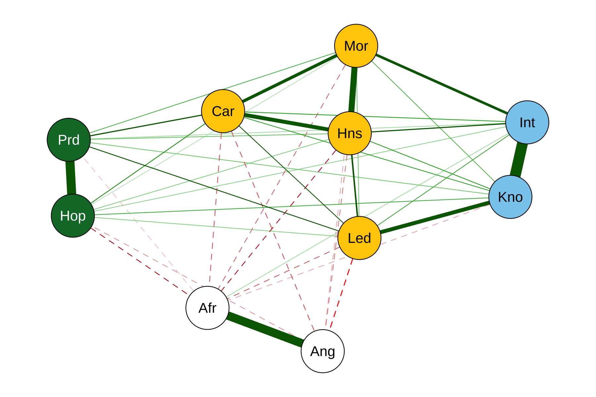
6.5 課題
ネットワーク心理学、相利共生モデル、そして併存疾患へのネットワークの視点に関する論文についての初期の仕事以来、大量の仕事がなされてきた。とりわけ、ネットワーク心理測定学は前例のない仕方で軌道に乗った。現代の心理測定学がネットワークの視点から再発明されている、と言えるだろう。あらゆるタイプのデータと研究の問いについて、ネットワークアプローチが利用可能であるように思われる。たとえば、ネットワークの視点からのメタ分析のための R パッケージがある (Salanti et al. 2014)。ネットワーク心理測定学と、項目反応理論 (Marsman et al. 2018)、因子モデル (Waldorp and Marsman 2022)、そして構造方程式モデリング (Epskamp, Rhemtulla, and Borsboom 2017) のような、より伝統的な技法との間の関係を理解するために多くのことがなされてきたことにも注意する。とはいえ、心理学的ネットワークモデリングとネットワーク心理測定学の両方にとって、依然として多くの課題がある。
6.5.1 心理学的ネットワークモデリング
これに関するすべての仕事にもかかわらず、私は、この理論的な研究の系譜が依然として揺籃期にある、と結論せざるをえない。知能への応用の強みは、それが \(g\) 因子モデルへの代替物を提供することである。\(g\) 因子モデルもまた理論のスケッチにすぎない。相利共生モデルの拡張 (de Ron et al. 2023; Savi et al. 2019) は新たなステップを加えるが、かなり限られたモデルにとどまっている。この状態の一つの理由は、知能に、そして実際どんな心理システムにも関与する初歩的な過程を突き止めることが本当に難しい、ということである。
これは因子説明では問題が少ないかもしれない。というのも、指標は反映的因子モデルでは互換的だからである。いったん十分に広い指標の集合をもてば、共通原因の推定は頑健になる。形成的モデルでは、各指標が指標変数に特定の意味を寄与する。しかし、これは共通原因モデルを好む理由にはならない (van der Maas, Kan, and Borsboom 2014)。
他のモデリングの例も同じ問題に悩まされる。臨床心理学のモデルでは、私たちはノードを、精神障害の診断と統計マニュアル（DSM）で指定された症状として、あるいはインタビューや質問紙で尋ねられる質問として定義する。その利点は、そうすればモデルを当てはめるデータが得られる、ということである。しかし、再び、臨床障害における初歩的な過程とその相互作用を知る本当の方法はない (Fried and Cramer 2017)。
重要な初歩的なノードを見落とせば、これは私たちのモデルと心理測定学的ネットワーク分析の妥当性に深刻な影響を及ぼしうる。
一つの出口は、平均場近似を用いて、イジング態度モデルの文脈で述べられた。態度の大域的な振る舞い（ヒステリシス、ダイバージェンス）にのみ関心があれば、ノードの指定を無視できる（もう一つの互換的な論拠）。しかし、臨床的にうつ状態の人の特定のノードやリンクに介入したいなら、これは十分でない。
平均場分析では、すべてのノードの指定はそれほど重要でない。
もう一つの批判的な点は、これらのモデルが心理学的現象についての私たちの理解を高めるが、予測ないし介入する私たちの能力は高めないように見える、ということである。たとえば、イジング態度モデルは、態度のダイナミクスにおける関与（注意）の役割を理解するのに役立つ。この因子が高すぎれば、ヒステリシスのために説得は極めて難しくなる。陰謀論者と議論しようとしたことのある人なら誰でも、私の言いたいことがわかる。しかし、注意が少なすぎることも問題である。モデルでは、これらは外部場に敏感な人々である。たとえば、彼らに部屋を掃除するよう言うが、あなたが去るや否や、態度はランダムな揺らぎに逆戻りする。メッセージは伝わるが定着しない。私はこれが洞察に富むと思うが、それが私たちに介入を提供しないことは認めなければならない。私たちは注意や関与をどう制御するかを知らないが、これについてさらなる仕事がなされうるし、なされるだろう。
知能については、モデルは、近転移と遠転移の能動的な確立が効果的かもしれない、と示唆する。発達心理学からの失望させる教訓は、転移が常に自動的に生じるわけではない、ということである (たとえば Sala et al. 2019)。しかし、転移を改善する戦略は存在し (Barnett and Ceci 2002)、相利共生モデルによれば、一般的な効果をもつはずである。
第1章 sec-The-field-of-psychology で、生態学で研究された浅い湖の事例に言及した。そこでは、魚を捕ることが非常に効果的な介入であり、一方、原因である汚染に対処することはヒステリシスのために効果がなかった。生態学者は今やこれがなぜそうなのかを知っており、この現象を説明するモデルを開発した。しかし、私はこの介入がモデリングの仕事によってではなく、魚のいない池が時に自発的に澄んだ状態へと転換するのを観察した池の所有者によって示唆された、ということには言及しなかった。これは科学において珍しい道ではなく、臨床心理学でも十分に起こりうる。重いうつ病に対する電気ショック療法や、心的外傷後ストレス障害に対する新薬（MDMA）の喧伝される驚くべき成功が、私たちの「魚」でありうる。しかし、これらの主張も批判されてきた (たとえば Borsboom, Cramer, and Kalis 2019; Read and Moncrieff 2022)。
心理システムのネットワークモデリングにおいてはるかに多くの進歩がなされうるが、現実的であることが賢明である。生態系の数理モデリングにおける進歩も遅かった。 心理学的モデルの形式化は多くの理由から関心の対象であるが (Borsboom et al. 2021)、測定（sec-ch8）のような他の領域でも進歩を遂げる場合にのみ効果的だろう。
生態系と人間のシステムは恐ろしく複雑である。
6.5.2 心理測定学的ネットワーク分析
このアプローチも問題がないわけではなく、そのいくつかは心理学的ネットワークモデリングの問題に関係する。たとえば、ノードの定義と、データでノードを見落とすリスクは深刻な脅威である。この問題はネットワーク分析に固有のものではなく、単純な回帰分析も同じリスクに悩まされる。心理測定学的ネットワーク分析の多くの応用へのもう一つの一般的な脅威は、インタビューや質問紙における自己報告への依存である。一般化可能性は、統計分析自体よりも標本と測定方法の選択に依存するかもしれないが、これは一般に心理学における、とりわけ心理測定学的ネットワーク分析における一般的な問題のもう一つの例である。
心理測定学的ネットワーク分析は、結果が再現しにくいために批判されてきた (Forbes et al. 2017)。構造方程式モデリングであれ、fMRI であれ、ネットワーク心理測定学であれ、高度な統計分析の再現は常に問題だが、いくつかの解決策が開発されてきた (Borsboom et al. 2017, 2018; Burger et al. 2022)。
ネットワーク分析について、再現可能性を高めるためにいくつもの安全策が開発されてきた。
最後の重要な問題は因果性に関わる。横断的データから推定されたネットワークモデルは、因果的というより記述的である。すなわち、それらは変数間の因果関係の方向についての情報を提供しない。ネットワークモデルから因果性を推論する方法を開発することは、この分野における重要な課題である。
時系列データ（\(N=1\)、\(N>1\)、あるいはパネルデータのいずれか）への移行はこの問題を部分的に解決する (Molenaar 2004)。時系列データがあれば、グレンジャー因果性、すなわち時系列分析における一つの変数の別の変数に対する予測力に基づく、因果性のより弱い形を確立できる。 しかし、その関係は見せかけであり、他の変数によって影響されているかもしれない。時系列のネットワーク分析は、しばしば多くの信頼できる定常なデータを必要とする。重要な問題は時系列のサンプリングレートである。一般に、連続的な時間変動する信号を正確に推定するには、信号の最大周波数の2倍でサンプリングする必要がある。これはナイキストレートと呼ばれる。もう一つの問題は時点間の等間隔性の仮定 (Epskamp et al. 2018) であり、これは連続時間モデルを用いることで回避できる (Voelkle et al. 2012)。
グレンジャー因果性は、一つの時系列が別の時系列を予測するとき、必ずしも真の因果関係を含意することなく、方向性のある影響を示唆する。
これらの問題はネットワーク心理測定学に固有のものではないが、実践上深刻な問題である (Hamaker et al. 2015; Ryan, Bringmann, and Schuurman 2022 を参照)。因果性の究極の検証には介入が必要である。 この路線に沿った新たな仕事については、Dablander and van Bork (2021) と Kossakowski, Waldorp, and van der Maas (2021) を参照されたい。
願わくは、観察データと実験データの組み合わせが、有向非巡回グラフにおける因果関係を適切に推定するのに十分な情報を提供しうる。
おそらく他の仕方も考えられる。単純だが実装が難しい手続きは、被験者にそのネットワークにおけるリンクについて尋ねることである。気候への影響のために肉を食べないと主張する人がいれば、この個人のネットワークに有向リンクを加えることを考えるかもしれない (Rosencrans, Zoellner, and Feeny 2021)。Deserno et al. (2020) は、自閉症における因果関係についての臨床家の知覚を用いた。これらの関係は、自己報告されたクライエントのデータで見出されたものと整合した。主たる問題は、報告すべきノードよりもはるかに多くの可能なリンクがある、ということであり、これが質問紙を極めて長く記入するのに退屈なものにする。Brandt (2022) は、態度ネットワークを構成するために概念的類似性の判断を適用した。あるいは、自動的な技法を用いて、ソーシャルメディアのデータ、インタビュー、あるいはエッセイからリンクを推定しようと試みることもできる (Peters, Zörgő, and van der Maas 2022)。
6.6 結論
これらの批判的な注釈にもかかわらず、心理学的ネットワークアプローチが非常に短い間に大きな進歩を遂げた、と言って差し支えない。相利共生の論文はわずか 2006 年に出版された。それは心理学の分野内での複雑系アプローチの新たで独自な応用である。私にとって、共通原因アプローチは理論的に満足のいくものではない。というのも、共通原因は純粋に仮説的な構成体だからである。\(g\) 因子についても \(p\) 因子についても、その起源についての妥当な説明はない。対照的に、知能と精神病理のネットワーク理論の基礎にある機能と症状の間の相互的な相互作用は、ほとんど論争の余地がない。ネットワークアプローチが心理学における統計的因子分析の仕事と矛盾しないことに注意するのもよい。それは一般因子を共通原因として解釈するか指標として解釈するかの問題である。因子の形成的解釈はネットワークアプローチと整合する。
次章では、社会ネットワークを用いた社会的相互作用のモデリングへの一歩を踏み出す。そこではノードは、新たな場所へ移動し、言語を学び、文化的属性を共有し、意見をもつエージェントを表す。焦点は意見ネットワークにある。この章は、イジング態度ネットワークモデルに立脚した、私たち自身の意見ダイナミクスのエージェントベースモデルで終わる。この意見モデルは、個人内態度ネットワークの社会ネットワークである。単純化のために、個人内のレベルでイジング態度ネットワークモデルのカスプ記述を用いる。本質的に、このモデルは相互作用するカスプに基づいており、第4章（sec-Cascading-transitions-in-multifigure-multistable-perception）で紹介した多図形多安定知覚のモデルに似ている。この意見モデルは、分極化の新たな説明と新たな治療法を示唆する。
6.7 演習問題
スケールフリーネットワークのウィキペディアのページに示された Barabási—Albert モデルの次数分布を再現せよ。igraph ライブラリの sample_pa を用いよ。(*)
NetLogo で「Preferential Attachment」モデルを開いて実行せよ。
report [one-of both-ends] of one-of linksの行をreport one-of turtlesに置き換えよ。新たなノードは今やランダムなノードに結合する。これはランダムネットワークをもたらすか。(*)NetLogo の「Vulnerability to Depression」モデルでヒステリシスのプロットを作れ（sec-Symptom-networks を参照）。(*)
「Vulnerability to Depression」モデルでは、
administer-shockボタンですべての症状を一度に不活性化できる。それはネットワークに電気ショックを与えてすべての症状をリセットするかのようである。ショックを与えるとシステムが再び健全になるような、無秩序なネットワーク（network statusプロットの黒い線の上）を作り出すconnection-strengthとexternal-activationの設定を見つけてみよ。この健全な状態は長期的に安定か。(*)学習過程の間、学習イジング態度モデルについてギブスエントロピーを計算せよ（sec-The-stability-of-attitudes-and-entropy-measures を参照）。学習がギブスエントロピーを最小化することをプロットで示せ。(**)
JASP（jasp-stats.org）をインストールして開け。データライブラリ「6. Factor」を開け。すべての出力を読み、検証的因子分析を加えよ。検証的一因子モデルにおける Residual Pitch の標準化因子負荷は何か。(*)
ブログ「How to Perform a Network Analysis in JASP」8 を読め。figure fig-ch6-img16-old-85 の上のプロットを再現せよ。sec-Fitting-the-mutualism-model の R コードを用いてデータを生成し、データを JASP に取り込み、ネットワーク分析を行え。(*)
M 行列が三つのブロックから成る場合の R コードを研究せよ（sec-Fitting-the-mutualism-model）。データを生成し JASP に取り込め。探索的因子分析を適用し、1 から 3 因子の当てはめを確認し、\(p\) 値を報告せよ。検証的 3 因子モデルを当てはめよ。それは当てはまるか。V1 を第一因子ではなく第二因子に加えよ。不適合をどう見て取れるか。(*)
相利共生モデルを用いて高次因子モデルのためのデータをどう生成できるか。三つのブロックの場合について M 行列のコードで何を変えるべきか。（相関しない因子を仮定した）三因子解が得られるデータに当てはまらないことを示せ。高次因子モデルを当てはめ、当てはめの良さの \(p\) 値を報告せよ。ネットワークプロットはどう変わるか。(**)
閉路をなすネットワーク（v1 -> v2 -> v3…v12 -> v1）のデータを生成せよ。ネットワークと探索的因子モデルを当てはめよ。これは機能するか。これは、すべてのネットワークモデルのクラスとすべての因子モデルの間の関係について何を教えてくれるか。(**)
figure fig-ch6-img18-old-87 のために生成したデータに JASP でベイジアンネットワークを当てはめよ。注意——JASP の GM は (0,1) データを期待する。シミュレートされたリンクだけが高いベイズ因子をもつことを確認せよ。(*)
Barabási, Albert-László, and Márton Pósfai. 2016. Network Science. 1st edition. Cambridge, United Kingdom: Cambridge University Press.
Barnett, Susan M., and Stephen J. Ceci. 2002. “When and Where Do We Apply What We Learn?: A Taxonomy for Far Transfer.” Psychological Bulletin 128: 612–37. https://doi.org/10.1037/0033-2909.128.4.612.
Bascompte, Jordi, and Pedro Jordano. 2013. Mutualistic Networks. Princeton University Press.
Battiston, Federico, Enrico Amico, Alain Barrat, Ginestra Bianconi, Guilherme Ferraz de Arruda, Benedetta Franceschiello, Iacopo Iacopini, et al. 2021. “The Physics of Higher-Order Interactions in Complex Systems.” Nature Physics 17 (10): 1093–98. https://doi.org/10.1038/s41567-021-01371-4.
Blanken, Tessa F., Marie K. Deserno, Jonas Dalege, Denny Borsboom, Peter Blanken, Gerard A. Kerkhof, and Angélique O. J. Cramer. 2018. “The Role of Stabilizing and Communicating Symptoms Given Overlapping Communities in Psychopathology Networks.” Scientific Reports 8 (1): 5854. https://doi.org/10.1038/s41598-018-24224-2.
Boccaletti, S., G. Bianconi, R. Criado, C. I. del Genio, J. Gómez-Gardeñes, M. Romance, I. Sendiña-Nadal, Z. Wang, and M. Zanin. 2014. “The Structure and Dynamics of Multilayer Networks.” Physics Reports, The structure and dynamics of multilayer networks, 544 (1): 1–122. https://doi.org/10.1016/j.physrep.2014.07.001.
Borsboom, Denny. 2008. “Psychometric Perspectives on Diagnostic Systems.” Journal of Clinical Psychology 64 (9): 1089–1108. https://doi.org/10.1002/jclp.20503.
———. 2017. “A Network Theory of Mental Disorders.” World Psychiatry 16 (1): 5–13. https://doi.org/10.1002/wps.20375.
Borsboom, Denny, Angélique O. J. Cramer, and Annemarie Kalis. 2019. “Brain Disorders? Not Really: Why Network Structures Block Reductionism in Psychopathology Research.” Behavioral and Brain Sciences 42: e2. https://doi.org/10.1017/S0140525X17002266.
Borsboom, Denny, Angélique O. J. Cramer, Verena D. Schmittmann, Sacha Epskamp, and Lourens J. Waldorp. 2011. “The Small World of Psychopathology.” PLOS ONE 6 (11): e27407. https://doi.org/10.1371/journal.pone.0027407.
Borsboom, Denny, Eiko I. Fried, Sacha Epskamp, Lourens J. Waldorp, Claudia D. van Borkulo, Han L. J. van der Maas, and Angélique O. J. Cramer. 2017. “False Alarm? A Comprehensive Reanalysis of ‘Evidence That Psychopathology Symptom Networks Have Limited Replicability’ by Forbes, Wright, Markon, and Krueger (2017).” Journal of Abnormal Psychology 126: 989–99. https://doi.org/10.1037/abn0000306.
Borsboom, Denny, Donald J. Robinaugh, Mijke Rhemtulla, and Angélique O. J. Cramer. 2018. “Robustness and Replicability of Psychopathology Networks.” World Psychiatry 17 (2): 143–44. https://doi.org/10.1002/wps.20515.
Borsboom, Denny, Han L. J. van der Maas, Jonas Dalege, Rogier A Kievit, and Brian D Haig. 2021. “Theory Construction Methodology: A Practical Framework for Building Theories in Psychology.” Perspectives on Psychological Science 16 (4): 756–66. https://doi.org/10.1177/1745691620969647.
Brandt, Mark J. 2022. “Measuring the Belief System of a Person.” Journal of Personality and Social Psychology 123 (4): 830–53. https://doi.org/10.1037/pspp0000416.
Bringmann, Laura F., Timon Elmer, Sacha Epskamp, Robert W. Krause, David Schoch, Marieke Wichers, Johanna T. W. Wigman, and Evelien Snippe. 2019. “What Do Centrality Measures Measure in Psychological Networks?” Journal of Abnormal Psychology 128: 892–903. https://doi.org/10.1037/abn0000446.
Broido, Anna D., and Aaron Clauset. 2019. “Scale-Free Networks Are Rare.” Nature Communications 10 (1): 1017. https://doi.org/10.1038/s41467-019-08746-5.
Burger, Julian, Adela-Maria Isvoranu, Gabriela Lunansky, Jonas M. B. Haslbeck, Sacha Epskamp, Ria H. A. Hoekstra, Eiko I. Fried, Denny Borsboom, and Tessa F. Blanken. 2022. “Reporting Standards for Psychological Network Analyses in Cross-Sectional Data.” Psychological Methods, No Pagination Specified–. https://doi.org/10.1037/met0000471.
Caspi, Avshalom, Renate M. Houts, Daniel W. Belsky, Sidra J. Goldman-Mellor, HonaLee Harrington, Salomon Israel, Madeline H. Meier, et al. 2014. “The p Factor: One General Psychopathology Factor in the Structure of Psychiatric Disorders?” Clinical Psychological Science : A Journal of the Association for Psychological Science 2 (2): 119–37. https://doi.org/10.1177/2167702613497473.
Christensen, Alexander P., and Yoed N. Kenett. 2021. “Semantic Network Analysis (SemNA): A Tutorial on Preprocessing, Estimating, and Analyzing Semantic Networks.” Psychological Methods, No Pagination Specified–. https://doi.org/10.1037/met0000463.
Clauset, Aaron, Cristopher Moore, and M. E. J. Newman. 2008. “Hierarchical Structure and the Prediction of Missing Links in Networks.” Nature 453 (7191): 98–101. https://doi.org/10.1038/nature06830.
Costantini, Giulio, Sacha Epskamp, Denny Borsboom, Marco Perugini, René Mõttus, Lourens J. Waldorp, and Angélique O. J. Cramer. 2015. “State of the aRt Personality Research: A Tutorial on Network Analysis of Personality Data in R.” Journal of Research in Personality, R Special Issue, 54 (February): 13–29. https://doi.org/10.1016/j.jrp.2014.07.003.
Cramer, Angélique O. J., Claudia D. van Borkulo, Erik J. Giltay, Han L. J. van der Maas, Kenneth S. Kendler, Marten Scheffer, and Denny Borsboom. 2016. “Major Depression as a Complex Dynamic System.” PLOS ONE 11 (12): e0167490. https://doi.org/10.1371/journal.pone.0167490.
Cramer, Angélique O. J., Sophie Van Der Sluis, Arjen Noordhof, Marieke Wichers, Nicole Geschwind, Steven H. Aggen, Kenneth S. Kendler, and Denny Borsboom. 2012. “Dimensions of Normal Personality as Networks in Search of Equilibrium: You Can’t Like Parties If You Don’t Like People.” European Journal of Personality 26 (4): 414–31. https://doi.org/10.1002/per.1866.
Cramer, Angélique O. J., Lourens J. Waldorp, Han L. J. van der Maas, and Denny Borsboom. 2010. “Comorbidity: A Network Perspective.” The Behavioral and Brain Sciences 33 (2-3): 137-150; discussion 150-193. https://doi.org/10.1017/S0140525X09991567.
Cronbach, Lee J. 1957. “The Two Disciplines of Scientific Psychology.” American Psychologist 12: 671–84. https://doi.org/10.1037/h0043943.
Dablander, Fabian, and Max Hinne. 2019. “Node Centrality Measures Are a Poor Substitute for Causal Inference.” Scientific Reports 9 (1): 6846. https://doi.org/10.1038/s41598-019-43033-9.
Dablander, Fabian, and Riet van Bork. 2021. “Causal Inference.” In Network Psychometrics with R, 213–32. N Isvoranu, A. M., Epskamp, S., Waldorp, L. J., & Borsboom, D. (Eds.). Network Psychometrics with R: A Guide for Behavioral and Social Scientists. Routledge, Taylor & Francis Group. Routledge.
Dalege, Jonas, Denny Borsboom, Frenk van Harreveld, and Han L. J. van der Maas. 2017. “Network Analysis on Attitudes: A Brief Tutorial.” Social Psychological and Personality Science 8 (5): 528–37. https://doi.org/10.1177/1948550617709827.
Dalege, Jonas, Denny Borsboom, Frenk van Harreveld, Helma van den Berg, Mark Conner, and Han L. J. van der Maas. 2016. “Toward a Formalized Account of Attitudes: The Causal Attitude Network (CAN) Model.” Psychological Review 123 (1): 2–22. https://doi.org/10.1037/a0039802.
Dalege, Jonas, Denny Borsboom, Frenk van Harreveld, and Han L. J. van der Maas. 2018. “The Attitudinal Entropy (AE) Framework as a General Theory of Individual Attitudes.” Psychological Inquiry 29 (4): 175–93. https://doi.org/10.1080/1047840X.2018.1537246.
Dalege, Jonas, and Han L. J. van der Maas. 2020. “Accurate by Being Noisy: A Formal Network Model of Implicit Measures of Attitudes.” Social Cognition 38 (Suppl): S26–41. https://doi.org/10.1521/soco.2020.38.supp.s26.
Dattagupta, S. 1981. “The Tricritical Point - a Qualitative Review.” Bull Mat Sci 3 (2): 133–39. https://doi.org/10.1007/BF02908488.
de Ron, Jill, Marie Deserno, Donald J. Robinaugh, Denny Borsboom, and Han L. J. van der Maas. 2023. “Towards a General Modelling Framework of Resource Competition in Cognitive Development.” OSF Preprints. https://doi.org/10.31219/osf.io/sh6w7.
DellaPosta, Daniel. 2020. “Pluralistic Collapse: The ‘Oil Spill’ Model of Mass Opinion Polarization.” American Sociological Review 85 (3): 507–36. https://doi.org/10.1177/0003122420922989.
Deserno, Marie K., Denny Borsboom, Sander Begeer, Riet van Bork, Max Hinne, and Hilde M. Geurts. 2020. “Highways to Happiness for Autistic Adults? Perceived Causal Relations Among Clinicians.” PLOS ONE 15 (12): e0243298. https://doi.org/10.1371/journal.pone.0243298.
Dorogovtsev, S. N., and J. F. F. Mendes. 2002. “Evolution of Networks.” Advances in Physics 51 (4): 1079–1187. https://doi.org/10.1080/00018730110112519.
Elovainio, Marko, Jari Lipsanen, Laura Pulkki-Råback, Jaana Suvisaari, and Christian Hakulinen. 2021. “Is Symptom Connectivity Really the Most Important Issue in Depression? Depression as a Dynamic System of Interconnected Symptoms Revisited.” Journal of Psychiatric Research 142 (October): 250–57. https://doi.org/10.1016/j.jpsychires.2021.08.004.
Epskamp, Sacha, Denny Borsboom, and Eiko I. Fried. 2018. “Estimating Psychological Networks and Their Accuracy: A Tutorial Paper.” Behavior Research Methods 50 (1): 195–212. https://doi.org/10.3758/s13428-017-0862-1.
Epskamp, Sacha, Angélique O. J. Cramer, Lourens J. Waldorp, Verena D. Schmittmann, and Denny Borsboom. 2012. “Qgraph: Network Visualizations of Relationships in Psychometric Data.” Journal of Statistical Software 48 (May): 1–18. https://doi.org/10.18637/jss.v048.i04.
Epskamp, Sacha, Mijke Rhemtulla, and Denny Borsboom. 2017. “Generalized Network Psychometrics: Combining Network and Latent Variable Models.” Psychometrika 82 (4): 904–27. https://doi.org/10.1007/s11336-017-9557-x.
Epskamp, Sacha, Lourens J. Waldorp, René Mõttus, and Denny Borsboom. 2018. “The Gaussian Graphical Model in Cross-Sectional and Time-Series Data.” Multivariate Behavioral Research 53 (4): 453–80. https://doi.org/10.1080/00273171.2018.1454823.
Finnemann, Adam, Denny Borsboom, Sacha Epskamp, and Han L. J. van der Maas. 2021. “The Theoretical and Statistical Ising Model: A Practical Guide in R.” Psych 3 (4): 593–617. https://doi.org/10.3390/psych3040039.
Forbes, Miriam K., Aidan G. C. Wright, Kristian E. Markon, and Robert F. Krueger. 2017. “Evidence That Psychopathology Symptom Networks Have Limited Replicability.” Journal of Abnormal Psychology 126: 969–88. https://doi.org/10.1037/abn0000276.
Fraser, Steven. 2008. The Bell Curve Wars: Race, Intelligence, and the Future of America. Basic Books.
Fried, Eiko I., and Angélique O. J. Cramer. 2017. “Moving Forward: Challenges and Directions for Psychopathological Network Theory and Methodology.” Perspectives on Psychological Science 12 (6): 999–1020. https://doi.org/10.1177/1745691617705892.
Fried, Eiko I., Sacha Epskamp, Randolph M. Nesse, Francis Tuerlinckx, and Denny Borsboom. 2016. “What Are ’Good’ Depression Symptoms? Comparing the Centrality of DSM and Non-DSM Symptoms of Depression in a Network Analysis.” Journal of Affective Disorders 189 (January): 314–20. https://doi.org/10.1016/j.jad.2015.09.005.
Friedman, Jerome, Trevor Hastie, and Robert Tibshirani. 2008. “Sparse Inverse Covariance Estimation with the Graphical Lasso.” Biostatistics 9 (3): 432–41. https://doi.org/10.1093/biostatistics/kxm045.
Fytas, Nikolaos G., Victor Martin-Mayor, Marco Picco, and Nicolas Sourlas. 2018. “Review of Recent Developments in the Random-Field Ising Model.” Journal of Statistical Physics 172 (2): 665–72. https://doi.org/10.1007/s10955-018-1955-7.
Hamaker, Ellen L., E. Ceulemans, R. P. P. P. Grasman, and F. Tuerlinckx. 2015. “Modeling Affect Dynamics: State of the Art and Future Challenges.” Emotion Review 7 (4): 316–22. https://doi.org/10.1177/1754073915590619.
Haslbeck, Jonas M. B., and Oisı́n Ryan. 2022. “Recovering Within-Person Dynamics from Psychological Time Series.” Multivariate Behavioral Research 57 (5): 735–66. https://doi.org/10.1080/00273171.2021.1896353.
Hayes, Adele M., and Leigh A. Andrews. 2020. “A Complex Systems Approach to the Study of Change in Psychotherapy.” BMC Medicine 18 (1): 197. https://doi.org/10.1186/s12916-020-01662-2.
Hirsch, Morris W. 1985. “Systems of Differential Equations That Are Competitive or Cooperative II: Convergence Almost Everywhere.” SIAM Journal on Mathematical Analysis 16 (3): 423–39. https://doi.org/10.1137/0516030.
Huth, Karoline, Jill de Ron, Judy Luigjes, Anneke Goudriaan, Reza Mohammadi, Ruth van Holst, Eric-Jan Wagenmakers, and Maarten Marsman. 2023. “Bayesian Analysis of Cross-sectional Networks: A Tutorial in R and JASP.” PsyArXiv. https://doi.org/10.31234/osf.io/ub5tc.
Isvoranu, Adela-Maria, Sacha Epskamp, Lourens J. Waldorp, and Denny Borsboom. 2022. Network Psychometrics with R: A Guide for Behavioral and Social Scientists. Taylor & Francis Limited.
Jones, Payton J., Ruofan Ma, and Richard J. McNally. 2021. “Bridge Centrality: A Network Approach to Understanding Comorbidity.” Multivariate Behavioral Research 56 (2): 353–67. https://doi.org/10.1080/00273171.2019.1614898.
Kalisch, Raffael, Angélique O. J. Cramer, Harald Binder, Jessica Fritz, IJsbrand Leertouwer, Gabriela Lunansk, Benjamin Meyer, Jens Timiner, Ilya M. Veer, and Anne-Laura Van Harmelen. 2019. “Deconstructing and Reconstructing Resilience: A Dynamic Network Approach.” Perspectives on Psychological Science 14 (5): 765–77. https://doi.org/10.1177/1745691619855637.
Knyspel, Jacob, and Robert Plomin. 2024. “Comparing Factor and Network Models of Cognitive Abilities Using Twin Data.” Intelligence 104 (May): 101833. https://doi.org/10.1016/j.intell.2024.101833.
Kossakowski, Jolanda J., Lourens J. Waldorp, and Han L. J. van der Maas. 2021. “The Search for Causality: A Comparison of Different Techniques for Causal Inference Graphs.” Psychological Methods 26: 719–42. https://doi.org/10.1037/met0000390.
Kruis, Joost, Gunter K. J. Maris, Maarten Marsman, Maria Bolsinova, and Han L. J. van der Maas. 2020. “Deviations of Rational Choice: An Integrative Explanation of the Endowment and Several Context Effects.” Scientific Reports 10 (1): 16226. https://doi.org/10.1038/s41598-020-73181-2.
Lange, Jens, and Janis H. Zickfeld. 2021. “Emotions as Overlapping Causal Networks of Emotion Components: Implications and Methodological Approaches.” Emotion Review 13 (2): 157–67. https://doi.org/10.1177/1754073920988787.
Love, Jonathon, Ravi Selker, Maarten Marsman, Tahira Jamil, Damian Dropmann, Josine Verhagen, Alexander Ly, et al. 2019. “JASP: Graphical Statistical Software for Common Statistical Designs.” Journal of Statistical Software 88 (January): 1–17. https://doi.org/10.18637/jss.v088.i02.
Lowery, Megan R., Malissa A. Clark, and Nathan T. Carter. 2021. “The Balancing Act of Performance: Psychometric Networks and the Causal Interplay of Organizational Citizenship and Counterproductive Work Behaviors.” Journal of Vocational Behavior 125 (March): 103527. https://doi.org/10.1016/j.jvb.2020.103527.
Lunansky, Gabriela, Jasper Naberman, Claudia D. van Borkulo, Chen Chen, Li Wang, and Denny Borsboom. 2022. “Intervening on Psychopathology Networks: Evaluating Intervention Targets Through Simulations.” Methods 204 (August): 29–37. https://doi.org/10.1016/j.ymeth.2021.11.006.
Marsman, Maarten, Denny Borsboom, Joost Kruis, Sacha Epskamp, Riet van Bork, Lourens J. Waldorp, Han L. J. van der Maas, and Gunter K. J. Maris. 2018. “An Introduction to Network Psychometrics: Relating Ising Network Models to Item Response Theory Models.” Multivariate Behavioral Research 53 (1): 15–35. https://doi.org/10.1080/00273171.2017.1379379.
Marsman, Maarten, and Mijke Rhemtulla. 2022. “Guest Editors’ Introduction to The Special Issue ‘Network Psychometrics in Action’: Methodological Innovations Inspired by Empirical Problems.” Psychometrika 87 (1): 1–11. https://doi.org/10.1007/s11336-022-09861-x.
May, Edited by Professor Lord Robert, of Oxford, and Angela McLean, eds. 2007. Theoretical Ecology: Principles and Applications. Third Edition, Third Edition. Oxford, New York: Oxford University Press.
Meena, Chandrakala, Chittaranjan Hens, Suman Acharyya, Simcha Haber, Stefano Boccaletti, and Baruch Barzel. 2023. “Emergent Stability in Complex Network Dynamics.” Nature Physics, April, 1–10. https://doi.org/10.1038/s41567-023-02020-8.
Molenaar, Peter C. M. 2004. “A Manifesto on Psychology as Idiographic Science: Bringing the Person Back Into Scientific Psychology, This Time Forever.” Measurement: Interdisciplinary Research and Perspectives 2 (4): 201–18. https://doi.org/10.1207/s15366359mea0204_1.
Monroe, Brian M., and Stephen J. Read. 2008. “A General Connectionist Model of Attitude Structure and Change: The ACS (Attitudes as Constraint Satisfaction) Model.” Psychological Review 115: 733–59. https://doi.org/10.1037/0033-295X.115.3.733.
Needham, Amy Work, and Eliza L. Nelson. 2023. “How Babies Use Their Hands to Learn about Objects: Exploration, Reach-to-Grasp, Manipulation, and Tool Use.” WIREs Cognitive Science n/a (n/a): e1661. https://doi.org/10.1002/wcs.1661.
Nisbett, Richard E., Joshua Aronson, Clancy Blair, William Dickens, James Flynn, Diane F. Halpern, and Eric Turkheimer. 2012. “Intelligence: New Findings and Theoretical Developments.” American Psychologist 67 (2): 130–59. https://doi.org/10.1037/a0026699.
Peters, Gjalt Jorn Ygram, Szilvia Zörgő, and Han L. J. van der Maas. 2022. “The Qualitative Network Approach (QNA.” https://doi.org/10.31234/osf.io/cvf52.
Posternak, Michael A., and Ivan Miller. 2001. “Untreated Short-Term Course of Major Depression: A Meta-Analysis of Outcomes from Studies Using Wait-List Control Groups.” Journal of Affective Disorders 66 (2): 139–46. https://doi.org/10.1016/S0165-0327(00)00304-9.
Read, John, and Joanna Moncrieff. 2022. “Depression: Why Drugs and Electricity Are Not the Answer.” Psychological Medicine 52 (8): 1401–10. https://doi.org/10.1017/S0033291721005031.
Robinaugh, Donald J., Ria H. A. Hoekstra, Emma R. Toner, and Denny Borsboom. 2020. “The Network Approach to Psychopathology: A Review of the Literature 2008 and an Agenda for Future Research.” Psychological Medicine 50 (3): 353–66. https://doi.org/10.1017/S0033291719003404.
Rosencrans, Peter L., Lori A. Zoellner, and Norah C. Feeny. 2021. “A Network Approach to Posttraumatic Stress Disorder: Comparing Interview and Self-Report Networks.” Psychological Trauma: Theory, Research, Practice, and Policy, No Pagination Specified–. https://doi.org/10.1037/tra0001151.
Ryan, Oisı́n, Laura F. Bringmann, and Noémi K. Schuurman. 2022. “The Challenge of Generating Causal Hypotheses Using Network Models.” Structural Equation Modeling: A Multidisciplinary Journal 29 (6): 953–70. https://doi.org/10.1080/10705511.2022.2056039.
Sachisthal, Maien S. M., Brenda R. J. Jansen, Thea T. D. Peetsma, Jonas Dalege, Han L. J. van der Maas, and Maartje E. J. Raijmakers. 2019. “Introducing a Science Interest Network Model to Reveal Country Differences.” Journal of Educational Psychology 111: 1063–80. https://doi.org/10.1037/edu0000327.
Sala, Giovanni, N. Deniz Aksayli, K. Semir Tatlidil, Tomoko Tatsumi, Yasuyuki Gondo, and Fernand Gobet. 2019. “Near and Far Transfer in Cognitive Training: A Second-Order Meta-Analysis.” Edited by Rolf Zwaan and Peter Verkoeijen. Collabra: Psychology 5 (1): 18. https://doi.org/10.1525/collabra.203.
Salanti, Georgia, Cinzia Del Giovane, Anna Chaimani, Deborah M. Caldwell, and Julian P. T. Higgins. 2014. “Evaluating the Quality of Evidence from a Network Meta-Analysis.” PLOS ONE 9 (7): e99682. https://doi.org/10.1371/journal.pone.0099682.
Saul, D. M., Michael Wortis, and D. Stauffer. 1974. “Tricritical Behavior of the Blume-Capel Model.” Physical Review B 9 (11): 4964–80. https://doi.org/10.1103/PhysRevB.9.4964.
Savi, Alexander O., Maarten Marsman, Han L. J. van der Maas, and Gunter K. J. Maris. 2019. “The Wiring of Intelligence.” Perspectives on Psychological Science 14 (6): 1034–61. https://doi.org/10.1177/1745691619866447.
Simon, Herbert A. 1962. “The Architecture of Complexity.” Proceedings of the American Philosophical Society 106 (6): 467–82. https://www.jstor.org/stable/985254.
Smal, Iris, Jonas Dalege, and Han L. J. van der Maas. submitted. “The Learning Ising Attitude Model (LIAM): Entropy Reduction by Hebbian Learning,” submitted.
Spearman, C. 1904. “’General Intelligence,’ Objectively Determined and Measured.” The American Journal of Psychology 15: 201–93. https://doi.org/10.2307/1412107.
Spiller, Tobias R., Ofir Levi, Yuval Neria, Benjamin Suarez-Jimenez, Yair Bar-Haim, and Amit Lazarov. 2020. “On the Validity of the Centrality Hypothesis in Cross-Sectional Between-Subject Networks of Psychopathology.” BMC Medicine 18 (1): 297. https://doi.org/10.1186/s12916-020-01740-5.
Tesser, Abraham. 1978. “Self-Generated Attitude.” In Advances in Experimental Social Psychology, edited by Leonard Berkowitz, 11:289–338. Academic Press. https://doi.org/10.1016/S0065-2601(08)60010-6.
Tilman, D, S S Kilham, and P Kilham. 1982. “Phytoplankton Community Ecology: The Role of Limiting Nutrients.” Annual Review of Ecology and Systematics 13 (1): 349–72. https://doi.org/10.1146/annurev.es.13.110182.002025.
Treur, Jan. 2019. Network-Oriented Modeling for Adaptive Networks: Designing Higher-Order Adaptive Biological, Mental and Social Network Models. 1st ed. 2020 edition. Springer.
van Bork, Riet, Sacha Epskamp, Mijke Rhemtulla, Denny Borsboom, and Han L. J. van der Maas. 2017. “What Is the p-Factor of Psychopathology? Some Risks of General Factor Modeling.” Theory & Psychology 27 (6): 759–73. https://doi.org/10.1177/0959354317737185.
van der Maas, Han L. J., Jonas Dalege, and Lourens J. Waldorp. 2020. “The Polarization Within and Across Individuals: The Hierarchical Ising Opinion Model.” Journal of Complex Networks 8 (2): cnaa010. https://doi.org/10.1093/comnet/cnaa010.
van der Maas, Han L. J., Conor V. Dolan, Raoul P. P. P. Grasman, Jelte M. Wicherts, Hilde M. Huizenga, and Maartje E. J. Raijmakers. 2006. “A Dynamical Model of General Intelligence: The Positive Manifold of Intelligence by Mutualism.” Psychological Review 113 (4): 842–61. https://doi.org/10/c3jm44.
van der Maas, Han L. J., Kees-Jan Kan, and Denny Borsboom. 2014. “Intelligence Is What the Intelligence Test Measures. Seriously.” Journal of Intelligence 2 (1): 12–15. https://doi.org/10.3390/jintelligence2010012.
van der Maas, Han L. J., Kees-Jan Kan, Maarten Marsman, and Claire E. Stevenson. 2017. “Network Models for Cognitive Development and Intelligence.” Journal of Intelligence 5 (2): 16. https://doi.org/10.3390/jintelligence5020016.
Van Overwalle, Frank, and Frank Siebler. 2005. “A Connectionist Model of Attitude Formation and Change.” Personality and Social Psychology Review: An Official Journal of the Society for Personality and Social Psychology, Inc 9 (3): 231–74. https://doi.org/10.1207/s15327957pspr0903_3.
Vangeli, Eleni, John Stapleton, Eline Suzanne Smit, Ron Borland, and Robert West. 2011. “Predictors of Attempts to Stop Smoking and Their Success in Adult General Population Samples: A Systematic Review.” Addiction (Abingdon, England) 106 (12): 2110–21. https://doi.org/10.1111/j.1360-0443.2011.03565.x.
Voelkle, Manuel C., Johan H. L. Oud, Eldad Davidov, and Peter Schmidt. 2012. “An SEM Approach to Continuous Time Modeling of Panel Data: Relating Authoritarianism and Anomia.” Psychological Methods 17: 176–92. https://doi.org/10.1037/a0027543.
Waldorp, Lourens J., and Maarten Marsman. 2022. “Relations Between Networks, Regression, Partial Correlation, and the Latent Variable Model.” Multivariate Behavioral Research 57 (6): 994–1006. https://doi.org/10.1080/00273171.2021.1938959.
Wittenborn, A. K., H. Rahmandad, J. Rick, and N. Hosseinichimeh. 2016. “Depression as a Systemic Syndrome: Mapping the Feedback Loops of Major Depressive Disorder.” Psychological Medicine 46 (3): 551–62. https://doi.org/10.1017/S0033291715002044.
驚くべきことに、実際、ほとんどの人はナポレオンからわずか四、五回の握手しか隔たっていない。↩︎
この論文の元の題名は「No Reason to \(p\)」であったが、編集者はそれが面白いとは思わなかった。↩︎
すべての態度状態（項目）が正（または負）の値をもつ項目として再符号化されると仮定して。↩︎
JASP でネットワーク分析を行うことに関するブログ投稿（https://jasp-stats.org/2018/03/20/perform-network-analysis-jasp/）を読むことから始めるとよいかもしれない。↩︎
https://jasp-stats.org/2018/03/20/perform-network-analysis-jasp/↩︎